MyNote
体系结构
内存管理
内存管理基础
[toc]
为什么需要内存管理
早期是单道编程的内存管理。 后出现多道编程的内存管理。 多道编程的内存管理有两种方式，固定分区和动态分区两种技术 。

这种动态分区方法在系统刚启动时效果很好，但是随着时间的推移会出现很多内存空洞，内存的利用率随之下降， 这些内存空洞便是我们常说的内存碎片。 为了解决内存碎片化的问题，操作系统需要动态地移动进程，使得进程占用的空间是连续的，并且所有的空闲空间也是连续的。整个进程的迁移是一个非常耗时的过程。
主要问题：
- 进程地址空间保护问题。A进程踩B进程的内存。
- 内存使用效率低。要换入换出。
- 程序运行地址重定位问题 。需要重定位技术。
解决方案：
地址抽象，每个进程看起来，自己独占所有地址空间。

这种方案解决了上面三个问题，还剩一个内存碎片。
段页式
分段机制
分段机制，其基本思想是把程序所需的内存空间的虚拟地址映射到某个物理地址空间。
分段机制对虚拟内存到物理内存的映射依然以进程为单位。当物理内存不足时，换出到磁盘的依然是整个进程，因此会有大量的磁盘访问，进而影响系统性能。 常用的留着，不常用的换出到磁盘，会是更好的方案，于是就出现了分页机制。
分页机制

4G内存，4K一页，需要2^20 个页表项，每个占用4B，一共需要4M来存这张表。
多进程，每个进程都有一个4M的table，这无法接受，进程多了以后，内存全用来存table了，不用干活了。因此，出现了多级页表。
多级页表
把页表分成一级页表和二级页表，页表基地址寄存器指向一级页表的基地址，一级页表的页表项里存放了一个指针，指向二级页表的基地址。当处理器执行程序时，只需要把一级页表加载到内存中，并不需要把所有的二级页表都加载到内存中，而是根据物理内存的分配和映射情况逐步创建和分配二级页表。 这样做有两个原因： 一是程序不会马上使用完所有的物理内存； 二是对于 32 位系统来说， 通常系统配置的物理内存小于 4 GB， 比如仅有 512 MB 内存等。

图 14.5 展示了二级页表查询过程， VA[31:20]被用作一级页表的索引，一共有 12 位，最多可以索引 4096 个页表项； VA[19:12]被用作二级页表的索引，一共有 8 位，最多可以索引 256 个页表项。当操作系统复制一个新的进程时， 首先会创建一级页表， 分配 16 KB 页面。 在本场景中， 一级页表有 4096 个页表项， 每个页表项占 4 字节， 因此一级页表一共有 16 KB。 当操作 系统准备让进程运行时，会设置一级页表在物理内存中的起始地址到页表基地址寄存器中。进 程在执行过程中需要访问物理内存，因为一级页表的页表项是空的，这会触发缺页异常。在缺页异常里分配一个二级页表，并且把二级页表的起始地址填充到一级页表的相应页表项中。接着，分配一个物理页面， 然后把这个物理页面的 PFN 填充到二级页表的对应页表项中， 从而完成页表的填充。随着进程的执行，需要访问越来越多的物理内存，于是操作系统逐步地把页表填充并建立起来。
这样，一级页表变小了，一级页表中很多entry也没有实际的二级页表对应，整体会小很多。比如，可能只需要一个一级页表，5个二级页表，就能完成进程所需的所有内存映射。累计使用只有几KB。
确认使用几层页表的架构。这取决于内核版本、处理器架构。
ARM64 处理器来说， 通常会使用 3 级或者 4 级页表
X86架构，最多支持5级页表。
ARM64 内管管理
ARM64 处理器内核的 MMU 包括 TLB 和页表遍历单元（ Table Walk Unit， TWU） 两个部件。

在 SMP（ Symmetric Multi-Processor， 对称多处理器） 系统中， 每个处理器内核内置了 MMU和 TLB 硬件单元。

页表
AArch64 执行状态的 MMU 支持单一阶段的页表转换，也支持虚拟化扩展中两阶段的页表 转换。
单一阶段的页表转换指把虚拟地址（ VA）翻译成物理地址（ PA）。
两阶段的页表转换包括两个阶段。 在阶段 1， 把虚拟地址翻译成中间物理地址（ Intermediate Physical Address， IPA）；在阶段 2，把 IPA 翻译成最终 PA。
ARMv8 体系结构还支持 4 KB、 16 KB 或 64 KB 这 3 种页面粒度。
在 AArch64 体系结构中，因为地址总线位宽最多支持 48 位，所以 VA 被划分为两个空间， 每个空间最多支持 256 TB。
-
低位的虚拟地址空间位于 0x0000000000000000 到 0x0000FFFFFFFFFFFF。 如果虚拟地
址的最高位等于 0， 就使用这个虚拟地址空间， 并且使用 TTBR0_ELx 来存放页表的基 地址。
-
高位的虚拟地址空间位于 0xFFFF000000000000 到 0xFFFFFFFFFFFFFFFF。如果虚拟 地址的最高位等于 1， 就使用这个虚拟地址空间， 并且使用 TTBR1_ELx 来存放页表的 基地址。

48位地址宽度，4K页表查询过程

两套页表
与 x86_64 体系结构的一套页表设计不同， AArch64 执行状态的体系结构采用分离的两套页 表设计。如图 14.16 所示，整个虚拟地址空间分成 3 部分，下面是用户空间，中间是非规范区 域，上面是内核空间。当 CPU 要访问用户空间的地址时， MMU 会自动选择 TTBR0 指向的页 表。当 CPU 要访问内核空间的时候， MMU 会自动选择 TTBR1 这个寄存器指向的页表，这是 硬件自动做的。

页表项描述符
L0-L2 Entry
AArch64 状态的体系结构中 L0～L3 页表项描述符的格式不完全一样。 其中， L0～L2 页表项描述符的内容比较类似，如图 14.17 所示。

L3 Entry

寄存器
与地址转换相关的控制寄存器主要有如下几个： 转换控制寄存器（ Translation Control Register， TCR）； 系统控制寄存器（ System Control Register， SCTLR）； 转换页表基地址寄存器（ Translation Table Base Register， TTBR）。
恒等映射
恒等映射指的是把虚拟地址映射到同等数值的物理地址上， 即虚拟地址（ VA） = 物理地址（ PA）。

SMMU
[toc]
什么是SMMU，它是做什么的？
系统内存管理单元 (SMMU, System Memory Management Unit) 是计算机体系结构中的一个关键组件，尤其在复杂的系统中，例如多核处理器、虚拟化环境和高性能计算系统中。它主要负责管理和控制系统内存访问的安全性和有效性。具体来说，SMMU 的主要功能包括以下几个方面：
- 地址转换：
- 虚拟地址到物理地址的映射：SMMU 负责将设备生成的虚拟地址转换为实际的物理地址。这种地址转换使得不同设备和软件可以在各自的地址空间中操作，而不需要了解物理内存的具体布局。
- I/O 虚拟化：SMMU 支持 I/O 设备的虚拟化，使多个虚拟机可以安全地共享同一物理设备。这对于虚拟化环境尤为重要，因为它可以隔离不同虚拟机的内存访问，防止相互干扰。
- 内存保护：
- 访问权限控制：SMMU 通过设置访问权限，确保只有被授权的设备或进程可以访问特定的内存区域。这有助于防止恶意软件或错误的设备访问系统中的敏感数据。
- 防止地址空间冲突：SMMU 能够防止不同设备或进程之间的地址空间冲突，确保每个设备或进程都在各自的受控地址空间内操作。
- 缓存一致性：
- 保持缓存一致性：SMMU 通过缓存一致性协议确保多个处理器和 I/O 设备之间的数据一致性。对于高性能计算和数据密集型应用，这一特性非常重要。
- 性能优化：
- 减少地址转换开销：SMMU 通过高效的地址转换机制，减少了设备和处理器进行地址转换的开销，从而提升系统性能。
- 支持高级内存管理功能：SMMU 提供了高级的内存管理功能，如大页支持、多级页表等，有助于优化内存使用和提升系统性能。
安全，地址可以不连续。
MMU-700是什么
在ARM 体系中，SMMU 是指为IO设备提供地址翻译的模块，其他体系结构下可能叫IOMMU等，而MMU-700是指具体的IP 产品。
所以有两份文档，一个是SMMU Spec，一个是MMU-700 TRM。
MMU与SMMU区别

SMMU位置

1）上面SMMU给（使能DMA）device提供地址转换功能。device1使用VA访问内存，smmu根据VA计算对应PA，访问物理内存；
2）下面SMMU一对一连接PCIe Root Complex (which itself hosts a network of endpoints)设备，为PCIE设备提供虚拟地址（通过ATS）功能。

1）SMMU A为complex device提供地址翻译功能；
2）SMMU B为多个device（使用同个I/O，经过DMA）提供地址翻译功能；
3）SMMU C并行提供多条路径，多个功能，以提供更高带宽，包括：
a. central translation table walker，包括主接口（用于获取翻译地址、初始化页表结构和队列）以及从接口（用于配置访问权限）。
b. 为多个device设备和PCIe提供虚拟化能力。

MMU-700 组成


The MMU‑700 contains the following key components: Translation Buffer Unit (TBU) The TBU contains Translation Lookaside Buffers (TLBs) that cache translation tables. The MMU‑700 implements a TBU that can be connected to single master or multiple masters. It is also possible to connect multiple TBUs to a single master to improve performance. These TBUs are local to the corresponding master and can be one of the following:
- ACE‑Lite TBU
- LTI TBU
Translation Control Unit (TCU) The TCU controls and manages the address translations. The MMU‑700 implements a single TCU. In MMU‑700-based systems, the AMBA® DTI protocol defines the standard for communicating with the TCU. See the AMBA® DTI Protocol Specification.
DTI interconnect The DTI interconnect connects multiple TBUs to the TCU
TBU 有两种类型，TBU ACE模式，可以把PA的transaction直接往下发，而c2000采用的是TBU LTI模式，不会把transaction往下发，而是把PA返回给pcie controller


TLB是什么
The TBU contains Translation Lookaside Buffers (TLBs) that cache translation tables.
TBU里有两级cache，一个micro TLB一个是mainTLB。
工作过程
PA = F(streamID, substreamID, Address)
step1.master（假设为pcie controller）使用VA中发起了一个transaction
step2.SMMU收到了VA，根据SMMU_CRO.SMMUEN判断是否启用SMMU,如果没开启则直接bypass,把VA作为PA执行 DMA请求,否则根据StreamlD查找对应STE;
根据STE.Config确定是否执行Stage1翻译,如果不需要则把VA直接当成IPA输入到Stage2翻译处,否则根据 STE.S1ContextPtr 以及 SubStreamID找到对应CD,并据此找到 Stage 1 translation table以及 ASID,执行Stage 1 translation table walk,将VA翻译成IPA并当成 Stage 2的输入;
根据STE.Config确定是否执行Stage2翻译,如果不需要则把IPA直接当成PA作为SMMU的输出,否则应根据STE.S2TTB 找到 Stage 2 translation table 以及 VMID,执行 Stage 2 translation table walk,将 IPA翻译成 PA并作为SMMU的输出,结 末翻译。
Note:在执行Stage 1/2 translation table walk前,需要查询SMMU的TLB以确定是否在缓存中有该请求的翻译结果,如果 有则直接返回对应结果,不进行translation table walk。否则需要执行translation table walk并在结束后将翻译结果存入TLB 中以备后续查询使用。
这种主要是针对 untranslated transaction, PCle的ATS translation request/PRI流程与其不同。
转换成PA
- TBU从TLB获取转换结果成功，输出PA
- TBU从TLB获取转换结果失败，TBU就会告知TCU必须执行transaction table walk，在memory获取translation table去获得VA到PA的转换
step3.SMMU使用PA发起transaction

有两级页表，可以配置寄存器，来控制是否进行这一级的翻译。
还有SMMU enable开关，如果关上了，就相当于没有SMMU这个东西，不进行翻译。
| 术语 | 概念 |
|---|---|
| StreamID | 一个平台上可以有多个SMMU设备，每个SMMU设备下面可能连接着多个Endpoint， 多个设备互相之间可能不会复用同一个页表，需要加以区分，SMMU用StreamID来做这个区分( SubstreamID的概念和PCIe PASID是等效的) |
| STE | Stream Table Entry, STE里面包含一个指向stage2地址翻译表的指针，并且同时还包含一个指向CD（Context Descriptor）的指针. |
| CD | Context Descriptor, 是一个特定格式的数据结构，包含了指向stage1地址翻译表的基地址指针 |
有两个重要数据结构，STE和CD。
STE（stream table entry）：包含stage1初始化信息、CD表指针（CD中包含stage1的页表基地址和相关转换信息）、stage2的页表基地址以及相关转换信息（如果使能stage2的话）
数据格式
STE


STE大小为64B。SMMU根据寄存器配置的STRTAB_BASE地址找到STE， STRTAB_BASE定义了STE的基地值， Stream id定义了STE的偏移。如果使用linear 查找， 通过STRTAB_BASE + sid * 64（一个STE的大小为64B）找到STE； 若使用2-level查找， 则先通过sid的高位找到L1_STD（STRTAB_BASE + sid[9:8] * 8, 一个L1_STD的大小为8B）, L1_STD定义了下一级查找的基地址，然后通过sid 找到具体的STE（l2ptr + sid[7:0] * 64）.
最终找到的STE如下所示，表中的信息包含属性相关信息， 翻译模式信息（是否 stream bypass, 若否，选择stage1, stage2或者stage1 + stage2翻译模式）。

CD


由上可知每个SubStreamID对应一个CD表，SubStreamID对应每个用户态空间地址，换句话说，每个涉及对应外设的进程，都对应一个SubStreamID。
SMMU command queue 与 event queue
系统软件通过Command Queue和Event Queue来和SMMU打交道，这2个Queue都是循环队列。 Command queue用于软件与SMMU的硬件交互，软件写命令到command queue, SMMU从command queue中 地区命令处理。 Event Queue用于SMMU发生软件配置错误的状态信息记录，SMMU将配置错误信息写到Event queue中，软件通过读取Event queue获得配置错误信息并进行配置错误处理。
streamID与substreamID
StreamID
StreamID is generated from the PCI RequesterID so that StreamID[15:0] ==RequesterID[15:0]
SubstreamID
The SubstreamID is equivalent to a PCIe PASID. Because the concept can be applied to non-PCIe systems, it has been given a more generic name in the SMMU. The maximum size of SubstreamID, 20 bits, matches the maximum size of a PCIe PASID.
c2k设计StreamID N是24，也就是StreamID[23:0]
StreamID[15:0]就是pcie的RequesterID[15:0].
StreamID[23:16]表示Root Complex，具体c2000上每个root complex对应的id是多少跟刘艺确认，由软件定义 此外:
SubstreamID 就是pcie的 PASID
异构内存管理SVA
[toc]
什么是 SVA ？
SVA (Shared Virtual Addressing) 指设备和处理器使用相同的虚拟地址空间的能力。 SVA 也被称为 SVM (Shared Virtual Memory)，但社区倾向用 SVA，避免与 Secure Virtual Machine 混淆。

SVA好处
-
降低 CPU 与高性能外设（GPU/NPU/SmartNIC/FPGA/ASIC/Accelerator等）间共享数据的开销
-
device 和 cpu 共用相同的内存指针，降低软件复杂度
-
设备 DMA 时具备了和 cpu 类似的缺页处理，不再需要 pin DMA page
SVA 能力需要三个方面特性的支持：
- 每个设备内支持多份地址空间，比如 PASID
- IO page fault 的支持，比如 PCIe 的 PRI
- MMU 与 IOMMU 页表的兼容
异构系统不兼容问题
C2K问题就在与一个使用了PPC的MMU，一个使用了ARM的SMMU。也表格格式不兼容。
ARM SMMU 采用的是正向页表，为每个进程组织一份页表
PPC MMU 采用的是反向页表，为整个系统物理内存组织页表
SVA地址翻译时，MMU和SMMU使用的都是进程的page table。但SMMU 的输入是64bit EA，MMU 的输入是64bit EA经过SLB转换后的78bit VA。
SVA 在各个平台上的实现不一样，比如 Intel 和 ARM 上各自有一套术语，但大体上含义一样。

为了实现共用一套页表，索引机制也得变，device 使用的是BDF编码的streamID，而一个BDF设备可以被多个进程使用，CPU是以process为单位的，两者颗粒度不同。因此需要使用PASID 功能，让设备DMA也以process来索引。
所以插入一个，记录一下什么是PASID。
PASID
什么是 PASID？这个是 PCIe spec 引入的概念。 PASID TLP prefix 中包含 20 bit 位宽的 PASID value，用来作为使用者 process 的标识。它与 Requeseter ID (BDF) 结合起来，可以作为一个地址空间的标识。一个 Requester ID 内的 PASID 是唯一的；换句话说，不同的 Requester ID 下，可以使用数字相同的 PASID，两者的地址空间不冲突。携带 PASID prefix 后，每个进程可以在拥有独立的虚拟地址空间的情况下，共用同一个 EP 设备。 PASID 与 ATS、PRI 功能正交，没有依赖关系。 PASID TLP prefix 的格式：

Intel IOMMU（VT-d）方案

Nvidia UVA

NoC片上互连
CHI 协议
[toc]
CHI协议作用
用于片上互连。连接SoC内的各个组件。
可以用于各种拓扑

Component
**RN：**接收请求
**HN：**维护cache一致性，在CMN700中，HNF包括SLC，Combined PoS/PoC(ordering)，Snoop Filter
**SN：**接收来自HN的请求

协议分层
分为三层，可以参考PCIe协议的三层。

**Protocol层（软件层）：**定义transaction 种类及对应的流程；
**Network层：**根据transaction 类型，生成packet。这里就会用到SAM表，来生成路由的flit包。
**Link层（硬件层）：**收发Flit包；流控。4种6个channel。
Protocol 层
Transaction 类型
CHI支持的tansaction非常多，大的类型主要有read，write，snoop，atomic，snoop等。
| Type | Transaction Type | Description |
|---|---|---|
| Read | ReadNoSnoop | 发起不需要缓存一致性检查的读请求。 |
| Read | ReadOnce | 发起读取一次数据的请求，可能需要缓存一致性检查。 |
| Read | ReadShared | 发起读取共享数据的请求，确保数据在其他缓存中有效。 |
| Read | ReadClean | 发起读取并清除数据的请求，确保数据在其他缓存中被标记为无效。 |
| Read | ReadNotSharedDirty | 发起读取非共享且已修改数据的请求，用于确保数据一致性。 |
| Read | ReadUnique | 发起唯一读取请求，确保数据在其他缓存中无副本。 |
| Snoop | CleanUnique | 清除唯一缓存行请求，确保数据在其他缓存中无副本。 |
| Snoop | CleanShared | 清除共享缓存行请求，确保数据在其他缓存中被标记为无效。 |
| Snoop | MakeUnique | 将共享数据转换为唯一数据的请求。 |
| Snoop | Evict | 驱逐缓存行请求，将数据从缓存中移除。 |
| Snoop | StashOnce | 将数据暂存到指定的目标缓存中。 |
| Snoop | StashUnique | 将数据唯一暂存到目标缓存中，确保在目标缓存中无副本。 |
| Snoop | DVM Operations | 支持维护缓存一致性的各类 DVM 操作（如 TLB 管理、缓存清除等）。 |
| Write | WriteNoSnoop | 发起不需要缓存一致性检查的写请求。 |
| Write | WriteUnique | 发起唯一写入请求，确保数据在其他缓存中无副本。 |
| Write | WriteLineUnique | 发起整行唯一写入请求，确保缓存行在其他缓存中无副本。 |
| Write | WriteBack | 将修改后的数据写回到内存中，确保数据一致性。 |
| Write | WriteClean | 写入并清除缓存行请求，确保缓存行在其他缓存中被标记为无效。 |
| Write | WriteEvictFull | 写入并驱逐整个缓存行的请求，确保缓存行在其他缓存中被移除。 |
| Atomic | Atomic Operations | 支持原子操作（如读-修改-写），确保多核系统中的数据一致性和同步。 |
看个具体的transaction flow

-
RN-F sends a Read request to HN-F.
-
HN-F sends a Read request to SN-F
The ID field values in the Read request are based on where the data response is to be sent. Data can be sent to the Requester or to the HN-F.
-
SN-F sends a data response directly to RN-F.
-
RN-F sends CompAck to HN-F as the request is ReadShared and requires CompAck to complete the transaction.
Network层
根据tansaction 类型以及SAM表，生成packet，包括srcid，tgtid等等的信息。
SAM表有RNSAM, HNSAM
用到的算法有直接映射和哈希映射。哈希映射有power of 2 hashing， hieracical hashing等。
Link层
4种6个channel。
TX: RSP DATA REQ
RX: RSP DATA SNP

缓存一致性
为什么需要缓存一致性，多个核，有多个cache，每个cache里有同一个数据的不同副本，改写任一一个副本，会导致其他副本和当前副本数据不一致，就需要维护这种一致性。
缓存一致性协议非常多，这里介绍两个用的最多的。
Cache line states

MESI

MOESI
MESI 协议在大部分场景下效果很好，但是在有些场景下会出现性能问题。例如，当状态为 M 的缓存行收到一个总线读信号时，它需要把脏数据写回内存中，然后才能和其他 CPU 共享这个数据， 因此频繁写回内存的操作会影响系统性能， 那如何继续优化呢？ MOESI 协议增加了一个拥有（ Owned， O）状态，状态为 M 的缓存行收到一个总线读信号之后，它不需要把缓存行的内容写入内存，而只需要把 M 状态转成 O 状态。 MOESI 协议除新增 O 状态之外， 还重新定义了 S 状态， 而 E、 M 和 I 状态与 MESI 协议中的对应状态相同。 与 MESI 协议中的 S 状态不同， 根据 MOESI 协议， 状态为 O 的高速缓存行中的数据与内存中的数据并不一致。 状态为 O 的缓存行收到总线读信号，不需要把缓存行内容写回内存中。 在 MOESI 协议中， S 状态的定义发生了细微的变化。 当一个高速缓存行的状态为 S 时， 它包含的数据并不一定与内存一致。如果在其他 CPU 的高速缓存中不存在状态为 O 的副本，该高速缓存行中的数据与内存一致；如果在其他 CPU 的高速缓存中存在状态为 O 的副本，该高速缓存行中的数据与内存可能不一致。

一个栗子
| address | data | |
|---|---|---|
| DDR | 0x100 | 0xa |
| Cache 1 | 0x100 | 0xa |
| Cache 2 | 0x100 | 0xa |
core 2 要修改自己的cache中的数据
| address | data | |
|---|---|---|
| DDR | 0x100 | 0xa |
| Cache 1 | 0x100 | 0xa |
| Cache 2 | 0x100 | 0xa --> 0xb |
具体操作：
发出一个写请求，然后HN收到这个写请求，开始查directory，发现有其他备份。发snoop，把其他备份废掉。然后就可以写cache了。现在自己是独占的了，也就可以写回到ddr中了。
最基础的操作，为了优化性能，还有很多花活。

CHI实现机制-基于目录
缓存一致性协议可以通过不同的机制实现，主要包括基于嗅探（snooping）和基于目录（directory-based）两种方式。AMBA CHI（Coherent Hub Interface）协议使用的是基于目录（directory-based）的缓存一致性机制。
工作原理
- 目录存储状态：每个内存块在目录中有一个条目，记录了该内存块当前在哪些缓存中存在，以及其状态（如共享、独占等）。
- 请求与响应：当一个处理器（或缓存）发出读/写请求时，它首先查询目录。目录会根据记录的信息决定如何响应这个请求，并通知相关缓存进行必要的状态更新或数据传输。
优点
- 扩展性好：由于不依赖于共享总线，基于目录的协议可以很好地扩展到大规模多处理器系统。
- 减少通信：通过目录中心化管理，减少了不必要的缓存间通信。
目录机制的实现
在CHI协议中，目录机制通常实现为：
- 集中式目录：在小规模系统中，目录可以集中存储在一个中心位置，所有处理器都通过这个中心位置查询和更新缓存状态。
- 分布式目录：在大规模系统中，目录可以分布在多个节点中，每个节点负责一部分内存块的缓存状态管理。这种方式提高了系统的扩展性和性能。
基于嗅探的缓存一致性协议
基于嗅探的缓存一致性协议依赖于总线上的通信，每个缓存控制器都监听（嗅探）总线上其他处理器发出的内存操作请求，以确保缓存的一致性。
工作原理
- 总线嗅探：所有缓存控制器监听总线上所有的读/写请求。每当一个处理器在总线上发出一个请求，其他缓存控制器都会检查自己缓存中的数据，并根据需要进行响应或更新。
- 状态变化：根据嗅探到的请求，缓存行的状态可能会改变。例如，如果一个缓存控制器嗅探到一个读取请求并发现自己持有该数据的独占或修改副本，它可能需要提供该数据并更新状态。
优点
- 实现简单：基于嗅探的协议比较简单，易于实现。
- 实时响应：由于所有缓存控制器都在监听总线上的请求，可以快速做出响应。
缺点
- 总线带宽限制：所有缓存都共享同一个总线，总线带宽成为系统性能的瓶颈。
- 扩展性差：随着处理器数量的增加，总线上的通信开销会显著增加，导致系统性能下降。
待补充：
- DVM
CMN700
CMN700
中断
[toc]
异常向量表
当异常发生时，处理器必须跳转和执行与异常相关的处理指令。异常相关的处理指令通常 存储在内存中， 这个存储位置称为异常向量。 在 ARM 体系结构中， 异常向量存储在一个表中， 称为异常向量表。在 ARMv8 体系结构中，每个异常级别都有自己的向量表，即 EL3、 EL2 和 EL1 各有一个异常向量表。
ARMv7 体系结构的异常向量表比较简单，ARMv7架构中的异常向量表地址从0x00000000开始， 每个表项是 4 字节， 每个表项里存放了一条跳转指令。 但是 ARMv8 的异常向量表发生了变化， 每一个表项是 128 字节， 这样可以存放 32 条指 令。注意， ARMv8 指令集支持 64 位指令集，但是每一条指令的位宽是 32 位，而不是 64 位。
ARMv8 的异常向量表存放的基地址可以通过向量基址寄存器（ Vector Base Address Register， VBAR）来设置。
ARM M7 是Arm v7架构，32位。
一个示例：

Address Exception Type
0x00000000 Reset
0x00000004 Undefined Instruction
0x00000008 Software Interrupt (SWI)
0x0000000C Prefetch Abort
0x00000010 Data Abort
0x00000014 Reserved
0x00000018 IRQ
0x0000001C FIQ
跳入异常向量表操作是异常发生时，硬件自动完成的，剩下的异常处理任务完全交给了程序员。由上表可知，异常向量是一个固定的内存地址，我们可以通过向该地址处写一条跳转指令，让它跳向我们自己定义的异常处理程序的入口，就可以完成异常处理了。
中断与异常区别
中断（Interrupt）
中断是由外部设备（如I/O设备、定时器等）发出的信号，通知处理器需要处理某个事件。中断通常是异步的，即它们可以在任何时间发生，并且与处理器当前执行的指令无关。
特点：
- 异步性：中断可以在任何时间发生，不依赖于当前指令的执行状态。
- 外部事件触发：通常由外部硬件设备触发，例如键盘输入、中断请求线（IRQ）等。
- 中断向量：每个中断通常都有一个对应的中断向量，用于指向相应的中断处理程序。
- 优先级和嵌套：中断控制器（如NVIC或GIC）可以管理中断的优先级和嵌套。
- 响应中断：处理器在中断发生时，会保存当前的执行状态，然后跳转到相应的中断处理程序。
示例：
- 定时器中断
- 键盘中断
- 网络中断
异常（Exception）
异常是由处理器在执行指令过程中检测到的特殊情况或错误条件。这些情况通常是同步的，即在执行特定指令时发生。
特点：
- 同步性：异常在特定指令执行过程中发生，是指令执行的结果。
- 内部事件触发：由处理器内部条件触发，例如非法指令、除零错误、页面错误等。
- 异常向量：每种异常类型都有一个对应的异常向量，用于指向相应的异常处理程序。
- 处理机制：处理器在检测到异常时，会停止当前指令的执行，保存状态，并跳转到相应的异常处理程序。
- 恢复执行：在处理完异常后，通常会尝试恢复执行被中断的指令或进行适当的错误处理。
示例：
- 未定义指令异常
- 除零错误
- 页面错误
| 特点 | 中断（Interrupt） | 异常（Exception） |
|---|---|---|
| 触发源 | 外部设备 | 处理器内部 |
| 时间 | 异步 | 同步 |
| 处理方式 | 中断处理程序 | 异常处理程序 |
| 优先级 | 可以有优先级和嵌套 | 一般没有嵌套处理 |
| 保存状态 | 保存处理器状态 | 保存处理器状态 |
| 恢复执行 | 处理完中断后恢复执行 | 处理完异常后尝试恢复执行或终止程序 |
中断
在 ARM 体系结构里，中断是属于异步异常的一种，其处理过程与异常处理很类似。
ARM64 处理器有两个与中断相关的引脚——nIRQ 和 nFIQ 。
这两个引脚直 接连接到 ARM64 处理器内核上。 ARM 处理器把中断请求分成普通 IRQ（Interrupt Request）和 FIQ（Fast Interrupt Request）两种。
PSTATE 寄存器里面有两位与中断相关，它们相当于 CPU 内核的中断总开关。 I：用来屏蔽和打开 IRQ。 F：用来屏蔽和打开 FIQ。


中断控制器NVIC与GIC

NVIC（Nested Vectored Interrupt Controller）
NVIC 是一种嵌套向量中断控制器，主要用于Cortex-M系列处理器。这些处理器通常用于微控制器和低功耗设备。NVIC的主要特点包括：
- 嵌套中断：
- 支持中断嵌套，中断优先级可以设置，使高优先级中断可以打断低优先级中断。
- 每个中断都有一个唯一的优先级，可以通过编程设置。
- 集成度高：
- NVIC是Cortex-M处理器内核的一部分，紧密集成在处理器内部。
- 通过内存映射的寄存器控制。
- 低延迟：
- 由于NVIC是处理器内核的一部分，中断响应时间非常快，适合实时应用。
- 特性：
- 提供向量表偏移寄存器（VTOR）以支持动态中断向量表。
- 支持多达240个中断（具体数量取决于具体的Cortex-M型号）。
GIC（Generic Interrupt Controller）
GIC 是一种通用中断控制器，主要用于Cortex-A系列处理器，这些处理器通常用于高性能应用，如嵌入式系统、智能手机和服务器。GIC的主要特点包括：
- 支持多个处理器：
- GIC支持多核系统，可以在多个处理器之间分发中断。
- 包括两个主要组件：分配器（Distributor）和CPU接口（CPU Interface）。
- 高级中断管理：
- 支持更复杂的中断管理机制，包括中断优先级、中断屏蔽和中断路由。
- 可以配置每个中断的目标处理器和优先级。
- 扩展性强：
- 设计用于处理大量中断，可以支持多达1020个中断（具体数量取决于具体实现）。
- GICv3和GICv4进一步增加了中断管理能力，支持更多的中断和更复杂的配置。
- 独立于处理器内核：
- GIC是一个独立的模块，通常与处理器分开实现，可以放置在片上系统（SoC）的不同位置。
- 通过内存映射的寄存器进行配置和控制。
总结
- NVIC：
- 主要用于Cortex-M系列处理器。
- 高度集成，低延迟，适合实时应用。
- 支持嵌套中断和优先级管理。
- GIC：
- 主要用于Cortex-A系列处理器。
- 支持多核系统和复杂的中断管理。
- 独立于处理器内核，实现灵活的中断分发和配置。
ARM GIC
[toc]
GIC 发展
在早期 ARM 系统（例如 ARM7 和 ARM9）中， 采用单核处理器设计，系统支持的中断源 比较少并且是单核处理器系统，使用简单的寄存器表示每个中断源的使能、关闭以及状态。假 设系统一共有 64 个中断源，每个寄存器一共有 32 位，每位描述一个中断源，那么只需要两个 中断使能寄存器（Interrupt Enable Register， IER）。 同理， 中断状态寄存器（Interrupt Status Register，ISR） 也只需要两个寄存器就够了。
在现在越来越复杂的 SoC 中，中断管理变得越来越困难，原因主要有以下几个方面：
- 中断源变得越来越多，有的系统中断源有几百个，甚至上千个。
- 中断类型也越来越多，比如普通的外设中断、软件触发的中断、 CPU 内核间的中断， 还有类似于 PCIe 上基于消息传递的中断等。
- 需要考虑虚拟化的支持。
比如，某个服务器芯片，有几十个core，每个core可能有多个中断，有多个PCIe子系统，一个子系统可能有500多个中断。
出于上面几个原因， ARM 公司开发了 GIC， 专门用来管理中断。 目前最新版本是 V4，典型 的 IP 是 GIC-700。 GIC 的发展史如表 13.1 所示。 其中， GIC-V1 指的是协议或者规范的版本， 而GIC-390 指的是具体中断控制器 IP 的型号。 ARM 公司先要制定出规范，然后再设计和实现 IP。

C2K使用的是GIC V4.1.
传统模式

MSI模式

GIC-V3
GIC-V3 主要新增了基于消息传递的中断，类似于 PCIe 中 MSIX 中断。 传统的中断源是需 要一个引脚的，而基于消息传递中断则不需要，只需要在设备内存里写入寄存器就触发中断， 该方案非常合适 PCIe 这类设备，因为 PCIe 上物理引脚有限。另外， GIC-V3 支持 CPU 的内核数量大于 8，适合于服务器处理器。基于 GIC-V3 规范开发的 IP 内核有 GIC-500 和 GIC-600。
GIC-V4
GICv4相较于GICv3的主要新功能和改进：
- vPE（虚拟处理单元）概念
GICv4引入了虚拟处理单元（vPE）的概念，增强了对虚拟化的支持。
- 虚拟中断重定向：GICv4允许直接将虚拟中断重定向到虚拟处理单元（vPE），这意味着虚拟中断可以直接投递给虚拟机而不需要先由虚拟机监控器（Hypervisor）处理。这减少了中断延迟，提高了虚拟化环境的性能。
- 直接中断注入
GICv4支持直接中断注入（Direct Injection），使得中断处理更加高效。
- 直接虚拟中断注入：GICv4允许直接将中断注入到运行中的虚拟机中，而不需要先中断虚拟机监控器。这个功能减少了中断处理的开销，提高了系统的性能。
- 增强的虚拟化支持
GICv4提供了更好的虚拟化支持，使得中断管理在虚拟化环境中更加高效和灵活。
- 对vPE的直接管理：GICv4允许虚拟机监控器直接管理和控制虚拟处理单元（vPE），从而更好地分配和控制虚拟中断。
- 硬件辅助中断处理
GICv4在硬件上增强了对中断处理的支持，减少了软件处理的负担。
- 虚拟中断控制器（vLPI Control）：GICv4支持虚拟中断的硬件处理，可以更高效地管理和分发虚拟中断。
- 扩展的中断优先级
GICv4扩展了中断优先级的范围，使得中断的优先级管理更加灵活。
- 更细粒度的优先级控制：GICv4支持更精细的优先级控制，允许对中断进行更精确的管理。
- 中断组的增强
GICv4提供了对中断组的更灵活管理。
- 中断组和组安全性：GICv4增强了对中断组的支持，允许对中断组进行更灵活的配置和管理，提高了系统的安全性和隔离性。
中断状态
每一个中断支持的状态有以下 4 种。 不活跃（inactive）状态：中断处于无效状态。 等待（pending）状态：中断处于有效状态，但是等待 CPU 响应该中断。 活跃（active）状态： CPU 已经响应中断。 活跃并等待（active and pending） 状态： CPU 正在响应中断， 但是该中断源又发送中断过来。
外设中断支持两种中断触发方式。 边沿触发（edge-triggered）：当中断源产生一个上升沿或者下降沿时，触发一个中断。 电平触发（level-triggered）： 当中断信号线产生一个高电平或者低电平时， 触发一个中断。
GIC组成
对于 GIC 来说， 为每一个硬件中断源分配的中断号就是硬件中断号。 GIC 会为支持的中断 类型分配中断号范围，如表

具体每个SoC设计各不相同，以下以GIC-V2为例。
- SGI 通常用于多核之间的通信。SGI通常在Linux内核中被用作处理器之间的 中断（Inter-Processor Interrupt， IPI）， 并会送达系统指定的 CPU 上。
- PPI 是每个处理器内核私有的中断。PPI 通常会送达指定的 CPU 上，应用场景有 CPU 本地定时器（local timer）。
- SPI 是公用的外设中断。
SGI 和 PPI 是每个 CPU 私有的中断，而 SPI 是所有 CPU 内核共享的。
GIC 主要由分发器（distributor）和 CPU 接口组成。分发器具有仲裁和分发的功能，分发 器为每一个中断源维护一个状态机，支持的状态有不活跃状态、等待状态、活跃状态和活跃并 等待。

GIC-V2 是由两个硬件单元组成的， 一个是分发器， 另一个是 CPU 接口（CPU interface），如图 13.2 所示。分发器主要用来做仲裁和分发， CPU 接口是与 CPU 内核连接的模块。分发器只有一个，是共用的，但是每个 CPU 内核有一个 CPU 接口，它们通过 nIRQ 与 nFIQ 这两个引脚和 CPU 内核连接在一起。
GIC-700
GIC-700中的组成：

gic-v3 的组成模块，分别是 Distributor 、Redistributor 、CPU interface 和 ITS （Interrupt Translation Service）。
其中，
-
Distributor 主要负责 SPI 的管理（priority、affinity、trigger-type），与推送 sgi 、spi 至指定的 Redistributor 。
-
Redistributor 主要负责 PPI 、LPI 的管理（priority、affinity、trigger-type），与推送 PPI 、LPI 送至 CPU interface。
-
CPU interface 负责接收来自 Redistributor 的中断信号，选择合适的中断发送给 CPU，并根据 CPU 的应答动作，协同 Distributor 和 Redistributor 完成中断状态机的状态迁移。
-
ITS 是可选模块，负责接收外设的 msi 消息，并将 msi 消息转换成 LPI 提交给指定的 Redistributor 。
| 英文缩写 | 英文全称 | 说明 |
|---|---|---|
| GIC | General Interrupt Controller | 通用中断控制器 |
| SGI | Software Generated Interrupt | 核间通信 |
| PPI | Private Peripheral Interrupt | 私有中断 |
| SPI | Shared Peripheral Interrupt | 共享中断 |
| LPI | Locality-specific Peripheral Interrupt | 消息中断 |
| PE | Process Element | 处理器单元 |
| ITS | Interrupt Translation Service | 中断翻译服务 |
| 中断 | 功能需求 |
|---|---|
| SGI | ① 可配置中断优先级 ② 触发SGI中断后，该中断会根据不同的security状态和中断group，发送到对应的PE（所有连接的PE / 一组PE） |
| PPI | ① 可配置中断优先级 ② 触发PPI中断，会被路由到特定的处理器上 |
| SPI | ① 可配置中断优先级 ② 可配置中断的触发方式 ③ 根据路由配置发送到对应的PE（某个PE / 一组PE） |
| LPI | ① 确认LPI实现方式（forwarding方式/ITS方式），并实现相关配置 ② 可配置中断优先级 |
以下基于linux kernel 5.10。
| 中断类型 | 中断号 | 说明 |
|---|---|---|
| SGI | 0 - 15 | 每个PE都会备份 |
| PPI | 16 – 31 | 每个PE都会备份 |
| SPI | 32 - 1019 | |
| 特殊中断号 | 1020 - 1023 | |
| 保留中断号 | 1024 - 1055 | |
| 扩展PPI | 1056 -1119 | GICv3.1版本后才支持 |
| 保留中断号 | 1120 - 4095 | |
| 扩展SPI | 4096 - 5119 | GICv3.1版本后才支持 |
| 保留中断号 | 5120 - 8191 | |
| LPI | 8192 - | 最大支持的中断号由实现确定 |
可以看到 LPI 的中断号是从 8192 开始的，具体实现多少个 LPI 中断由实现决定。设计人员会在 GICD_TYPER 寄存器 IDbits field 中告知软件具体实现了多少个 LPI。


注意区别：
GCI，即GIC Cluster Interface，包含了一个cluster的所有Redistributor；在c2000中，一个EXG对应一个cluster，包含一个core，8个thread；所以一个GCI包含了总共8个Redistributor
c2k框架中的ICI模块为自研模块，对应ARM的CPU interface模块
SGI 中断
核间通信：大core A发起请求，到CPU interface，到GICD路由，再发送到目标threadde GICR中，在通过interface给到对应的thread。
PPI 中断
私有中断：PPI中断源拉高，进入GICR，通过interface进入指定的thread。
比如EXG自己的timer。
SPI 中断
外设中断：SPI 拉高，GICD根据路由信息，发送到对应的GICR，GICR通过interface到对应的thread。
比如PCIe子系统中的中断。
LPI 中断
消息中断：MSI 进来，ITS翻译，找到对应的GICR，GICR通过interface到对应的thread。

整体处理流程如下；
-
外设写内存产生中断给ITS，外设写的内容包含device id和event id，device id用于标识设备，event id用于区分同一个设备不同的中断。
-
ITS在内存中有以下三张表，通过这三张表可以知道将中断路由到哪个GICR即哪个CPU：
a) Device table用于保存每个device对应的ITT中断转换表；
b) ITT表用于保存设置event id与collection id的对应关系；
c) Collection table用于保存collection id与GICR的对应关系。
- ITS驱动或软件通过三种方式与ITS进行通信：通过直接访问ITS寄存器、通过访问或修改三张表、通过CMDQ队列。
问题来了，为什么c2k设计MSI是its->gicd->gicr ？按照arm的理解是，its通过一系列查表之后得到redistributor（GICR）之后不需要在经过distributor(GICD)了？
咨询前端设计的同事得知，GICD是中心连接其他模块，其他模块没有互联的通路。因此ITS每一次查表都要经过GICD，GICD负责去读ddr查表，然后给到GICR。c2k设计图中反应的是硬件通路，而arm的拓扑关系并没有反映出这一点
RISCV AIA
[toc]
Cortex M3 MCU
[toc]
M3

MCU 整体架构


复杂一点的系统


ARM N2 参考设计
ARM N2 参考设计（ARM Neoverse N2 reference design）是一种基于ARM架构的处理器设计，专注于高性能和高效能计算。Neoverse N2 是 ARM 公司推出的一款针对数据中心、云计算和边缘计算等领域的高性能 CPU 架构。以下是一些关键特性：
- 高性能计算：N2 架构旨在提供高性能计算能力，适用于数据中心和云计算环境中的各种高负载应用，如人工智能、大数据分析和高性能计算（HPC）等。
- 多核设计：Neoverse N2 支持多核设计，能够实现更高的并行计算能力，从而提高整体计算效率。
- 能效优化：ARM N2 在提高性能的同时，注重能效优化，旨在提供更低的功耗和更高的性能比，适合在需要高效能计算的场景中使用。
- 扩展性：N2 架构具有良好的扩展性，支持大规模部署，可以适应不同规模和需求的数据中心和边缘计算环境。
- 兼容性：Neoverse N2 保持了对 ARM 生态系统的兼容性，支持现有的 ARM 软件和工具链，方便开发者进行迁移和优化。
通过这些特性，ARM N2 参考设计为构建高效能和高性能计算平台提供了一个可靠的基础，适用于多种现代计算需求和应用场景。
ARM Neoverse N2 参考设计中使用了多种 ARM 的知识产权（IP）模块，以实现其高性能和高效能的目标。以下是其中一些关键的 IP 组件：
- ARM Neoverse N2 CPU 核心：这是 N2 设计的核心，提供了高性能的计算能力。N2 核心基于 ARMv9 架构，支持高频率和多核配置，适合处理大规模并行工作负载。
- System Level Cache (SLC)：ARM N2 参考设计中集成了系统级缓存（SLC），用于在多个核心和其他系统组件之间共享数据，从而提高整体系统的性能和效率。
- CCIX 和 CXL 支持：N2 设计支持 CCIX（Cache Coherent Interconnect for Accelerators）和 CXL（Compute Express Link）接口，这些接口用于连接加速器和其他外部设备，提供高带宽、低延迟的数据传输能力。
- AMBA (Advanced Microcontroller Bus Architecture) 总线架构：AMBA 是一种用于片上系统（SoC）设计的总线标准，用于连接各种 IP 模块和外设。N2 参考设计中使用了 AMBA 架构来实现高效的数据传输和通信。
- TrustZone 安全技术：ARM TrustZone 技术提供了硬件隔离机制，增强了系统的安全性，适用于保护敏感数据和执行安全操作。
- Mali GPU（可选）：虽然 N2 主要专注于 CPU 性能，但在某些应用场景中，可能会集成 ARM 的 Mali GPU，以提供图形处理和加速计算能力。
- SMMU (System Memory Management Unit)：用于实现高级的内存管理功能，支持虚拟化和内存保护，提升系统的灵活性和安全性。
通过集成这些关键 IP 组件，ARM Neoverse N2 参考设计能够提供高性能、高效能和高扩展性的计算解决方案，满足数据中心、云计算和边缘计算等多种应用场景的需求。
本文通过从一些High Level 角度，简单介绍该处理器架构及其基本功能。
主要参考的是这份文档 Arm Neoverse N2 reference design Technical Overview

上图是整体架构，包括片内互连总线CMN-700，与PICe子系统相连的SMMU和NI-700，挂在RNI节点上的SCP，分布在不同位置的GIC与挂在SNF上的memory controller，及最关键的大core。
固件
ARM固件启动顺序
小core
-
硬件上电流程完成后，BMC释放系统内所有C2000 CHIP的POR_N，pervsoc开始做复位启动流程；
-
在otprom valid且硬件逻辑做完SCP SRAM的BISR流程后，PVO(SCP)自动从ROM （otprom内容）开始取指执行；
-
各SCP初始化各自的SRAM；
-
SCP ROM FW 对GPIO初始化，读取CHIP ID,根据CHIP ID确定自己是否是主CHIP;
-
根据是主还是从，初始化I2C/FSI（具体用哪个待定）为对应模式；
-
主CHIP的SCP还需要初始化QSPI;
-
主CHIP的SCP发起与其他CHIP的握手信号，检测系统中哪些CHIP在位；
-
主CHIP的SCP与在位的从CHIP SCP建立数据通路；
-
主CHIP的SCP从QSPI校验并搬运SCP RAM FW至主CHIP的SRAM;
-
主CHIP的SCP透过步骤8已打通的数据通路，将SCP RAM FW和签名数据包传递给从SCP,从SCP将其放至对应的SRAM:
-
各CHIP的SCP跳至对应的SRAM,运行SCP RAM FW:
-
主CHIP的SCP读取QSPI有关C2C的配置，并根据需要分发给对应的SCP；
-
主CHIP的SCP与从CHIP的SCP配合，根据C2C配置，初始化C2C;
-
各SCP根据 CHIP ID初始化CMN、OCM(SLC)和SAM;
-
各CHIP的SCP校验、加载MCP RAM FW,启动MCP(待确认)；+
-
各SCP初始化对应CHIP内大核的L2、NCU、SCOM/FIR;+
-
主CHIP的SCP校验并搬运 Hostboot base 镜像至主CHIP的OCM(SLC);+
-
主CHIP的SCP启动主CHIP内的第一个可用大核的第一个线程；
-
主大核第一个线程开始从srest（0x100）取指执行。
大core-hostboot
-
设置kernel other thread spinlock,此时只允许第一个thread往前走；
-
设置hostboot kernel堆栈，从汇编跳转至C/C++入口main函数；+
-
调用hostboot kernel模块内的静态构造函数；
-
初始化MMU(SLB/TLB),此时DIMM未准备好，只能用OCM(SLC,一个芯片多有28 核* 2MB=56MB，多能启用3/4）；
-
初始化时间管理的TB频率和CPU对象；
-
写Scratch寄存器，通知FSP/BMC;
-
为主CPU创建init main任务；
-
设置 kernel other thread spinlock为1，允许其它 thread往前走；
-
hostboot 进入task 调度，所有task 运行在user 模式，而kernel 服务运行在 hypersior 模式；
-
init main任务初始化VFS;
-
VFS遍历base modules，设置对应的模块的代码段和数据段属性，并调用对应模块
的init函数；
-
创建initservice任务；
-
initservice 按g_taskinfolist列表调用列表中的模块的初始化入口函数；
-
secureboot_base/ipmibase/pnor/vfs/extinitsvc等基本模块初始化；
-
动态验证并从hostboot extended image中加载其他模块；
-
extinitsvc 模块按g_exttaskinfolist 列表加载并初始化其他模块；
-
后一个模块是istepdisp，到此，必要的hostboot 模块完成初始化；
-
按istep执行启动流程（详细流程参见后面hostboot章节）；
-
istep 21.03加载、验证、解压payload(skiboot,OPAL);+
-
跳至payload(skiboot,OPAL)。
大core-skiboot
-
从大端转换成小端（C2000计划skiboot用小端编译）：
-
主thread 判断 skiboot 被加载的位置并根据需要做 relocate操作，其他thread则 等待；
-
主thread 设置 boot flag=1,允许其他 thread 往前走；
-
主 thread 跳至 main cpu entry,其他 thread 则跳至 secondary cpu entry;
-
初始化uart(console);
-
初始化skiboot启动阶段用的中断/异常向量表；
-
调用skiboot相关库的构造函数；
-
初始化opal call table;
-
处理 hostboot 传过来的 device tree 或HDAT;
-
根据DT初始化SCOM/eSPI(LPC):
-
根据DT初始化内存可用和保留区域（C2000的DIMM初始化应在其前面）；
-
根据DT初始化homer（C2000待确认是否需要）；
13.根据DT初始化所有可用CPU(thread);
14.将opal信息加到DT;
15.检测运行平台，并根据平台作配置：
16.根据平台配置，初始化BMC相关的ipmi/BT/UART;
17.初始化中断控制器（GIC）；
18.让所有可用CPU（thread）进入可用状态；
19.设置sreset，以实现CPU核的电源管理；
20.初始化TOD，同步TOD时钟；
21.初始化sensor 相关的OPAL接口；
22.调用平台初始化接口；
23.NV初始化；
24.安全启动（jiayu）初始化；
25.可信启动（TPM）初始化；
26.初始化opal console(UART)接口；
- PCIE HB初始化和PCIE枚举； (RC初始化，CXL与PCIe枚举，device tree 资源汇报等)
28.PCIE SLOT初始化；
29.回收未使用内存；
30.更新保留内存区域；
31.加载、验证、解压zImage(boot loader内核和petitboot);
32.启动boot loader内核。


CMN OCM(on chip memory) 是L3 cache，在没有DDR 的时候就使用这个组件来运行代码。与Intel的cache as ram 类似。
当OCM 当做memory 时候的时候，CMN OCM(on chip memory) 不能使用28*2=56M 全部缓存，只能用一部分，一般不超过3/4，实际只使用了32M。
测试流程：
SCP ram 中进行DDR training，不需要使用OCM 功能，将flash 中的内容直接搬到DDR 开始运行。
如果不开启OCM 功能，地址不会路由到SNF 节点中去。
标准流程：
SCP 中开启OCM 功能，SCP RAM将hostboot 搬到OCM 中去运行，skiboot 早期同样在OCM 中运行，在skiboot 中进行ddr training，然后搬运代码到DDR，关闭OCM，刷新OCM，开启cache 功能。
hostboot会将skiboot 搬到0x800 0000 处。
32M 最大的地址是0x200 0000, 而skiboot 默认会将自己搬到0x3000 0000 来运行，所以开了OCM，即不能去那里运行，当前代码使用的是0x0，也就是搬到0x0处运行。
RISC-V Firmware
概述
Firmware 启动的一般流程

ARM64 vs RISC-V

uboot处可以替换为EDK2，可以从PEI开始，也可以从DXE直接开始。

对应起来就是：
ZSBL: SCP ROM
FSBL: SCP RAM

AMBA
AXI
CHI
PCIe
PCIe
物理层
关键字：逻辑与电气，Link与Lane，串并转换，编码，加扰，EQ，LTSSM
Introduction
物理层就是将上层封装好的东西，通过电信号传输出去。

物理层主要分为两个子块：
- 逻辑子块（Logical Sub-Block）：逻辑子块负责编码和解码数据，以及处理时钟恢复和同步。它将数据链路层发送过来的数据进行编码后发送到电气子块。在接收方向，逻辑子块将电气子块接收的编码数据进行解码，恢复原始的数据，并送入数据链路层进行后续处理。此外，逻辑子块还处理与时钟恢复和数据流的对齐和同步相关的任务。
- 电气子块（Electrical Sub-Block）：电气子块负责实际的数据传输。它将逻辑子块编码的数据转换为电信号，并通过物理链路发送出去。在接收方向，电气子块将接收到的电信号转换回编码数据，并发送给逻辑子块。电气子块还负责处理物理链路的一些特性，如电平调整，差分信号传输，以及其他与物理链路的电气特性相关的任务。
Logical Sub-Block

Tx Buffer & Mux
这里有个buffer，缓存DL层的包。同时有个Mux，选择发送DL层的东西，或者发送物理层自己的有续集。因为有时候需要停下正常的包，发一些有续集，如skip等，所以需要这个buffer。
Byte Striping
把字节流分到不同的lane上。

Data Scrambling
首先，物理层会将接收到的数据进行加扰（Scrambling），让原本规整的数据流看上去像是随机数一样（所以有时候又把这个称为伪随机数生成：pseudo-random number generator）。
这样做的目的是为了避免信号的能量聚集在某些特殊的频段上，从而减少EMI。原理是这样：我们传输的数据其实是大量高频的0和1，而由于传输的数据可能是类似的，所以会形成特定高频的01变化的模式。了解傅里叶变换的小伙伴知道，任何周期信号都可以表示为一系列成谐波关系的正弦信号的叠加。这样分解之后，这种特定形状的高频信号，就会在特定的频率上产生能量集中的电磁波，导致干扰。而加扰（Scrambling）就是为了避免这种特定形状的信号出现，从而避免这种情况的发生。
而PCIe使用了一种非常聪明的方法进行数据加扰 —— 利用XOR运算！也就是线性反馈移位寄存器（LFSR，Linear-feedback shift register）

PCIe使用的是伽罗瓦（Galois）式LFSR，其中PCIe 1.0和2.0使用的是16位的LFSR的多项式表达为：

而3.0开始之后，使用的是更长的23位LFSR，表达为：

这样，每一次时钟，LFSR就会产生一个伪随机的bit，然后我们用这个bit和数据再进行一次XOR运算，就可以达到数据加扰的目的了。

另外，PCIe1.0和2.0中，数据加扰用的LFSR的初始值（Seed）都是0xFFFF，但是在PCIe3.0之后，为了避免不同的Lane上出现相似的数据，每条Lane上的LFSR的初始值（Seed）都不一样（大于等于8的Lane ID需要对8取模）：
| Lane | Seed |
|---|---|
| 0 | 1DBFBCh |
| 1 | 0607BBh |
| 2 | 1EC760h |
| 3 | 18C0DBh |
| 4 | 010F12h |
| 5 | 19CFC9h |
| 6 | 0277CEh |
| 7 | 1BB807h |
这个方法聪明的地方在于，通过XOR产生的伪随机数是可以恢复的！因为只要操作数一样，两次XOR操作的效果会被抵消，所以只要发送方和接收方的Seed一样，那么接收方就可以通过执行完全一样的LFSR操作，来恢复出原始的数据。
最后，为了方便我们用示波器调试，数据加扰是可以被关闭的。规范没有说怎么关闭，具体看厂商实现。
Encoding
在打乱数据之后，接下来就是对数据进行编码（Encoding）了。编码的目的是保证传输的0和1的数量尽可能的一致，从而保持DC平衡（DC Balance），让数据的传输更加可靠，也能帮助PCIe从数据信号中恢复时钟（Clock Recovery）。
PCIe使用的编码方式有三种：8b/10b编码，128b/130b编码和242B/256B FLIT编码。而一旦知道了编码方式和PCIe的总线时钟频率，我们就可以算出来每条Lane的传输速率了。用PCIe 1.0 8b/10b来举例子，这个代表8bit的数据会被编码为10b的数据进行传输，所以，最后每条Lane的传输速率就是：

以下是PCIe各个版本的编码方式和传输速率：
| PCIe Version | Line code | Transfer rate per lane | Throughput x1 | Throughput x16 |
|---|---|---|---|---|
| 1.0 | 8b/10b | 2.5 GT/s | 250 MB/s | 4 GB/s |
| 2.0 | 8b/10b | 5 GT/s | 500 MB/s | 8 GB/s |
| 3.0 | 128b/130b | 8 GT/s | 984.6 MB/s | 15.75 GB/s |
| 4.0 | 128b/130b | 16 GT/s | 1.969 GB/s | 31.51 GB/s |
| 5.0 | 128b/130b | 32 GT/s | 3.938 GB/s | 63.02 GB/s |
| 6.0 | 1b/1b 242B/256B FLIT | 64 GT/s | 7.564 GB/s | 121.00 GB/s |
注意：242B/256B是大写的B，不再是bit而是Byte了。
8b/10b编码
8b/10b编码主要用在PCIe 1.0和2.0中，为2.5GT/s和5GT/s的传输频率提供数据编码 [4]。它的核心思想是，将一个8bits的数据拆分成一个5bits的数据和一个3bits的数据，然后分别通过一个固定的关系映射到6bits和4bits的中空间中去，从而避免连续的0或者1的出现。如下：ABCDEFGH被拆分成ABCDE和FGH，然后转换为小端，再分别映射到abcdei和fghj中去。
转换后的8b/10b编码有两种类型的值：控制码（K）和数据码（D），根据数据ABCDE和FGH的分组，被记为D.<ABCDE>.<FGH>或者K.<ABCDE>.<FGH>。其具体的映射方式如下：


这里**RD（Running Disparity）**代表着当前字节开始前，前面的数据流中1的数量减去0的数量的差值。为了保证精确的01数量一致，8b/10b编码会使用这个值对当前字节的编码进行调整。这样它就能保证在传输每个字节之前，RD的值不会超过±1，在传输数据过程中，RD的值不会超过±2。
由于硬编码的原因，8b/10b编码可以精确的01数量一致，从而达到稳定的保持DC平衡，但是它的问题在于编码设计复杂，而且编码的效率有高达20%的浪费！这也是为什么PCIe 3.0之后，就不再使用8b/10b编码的原因。
128b/130b编码
PCIe 3.0之后，为了提高编码效率从而提升有效带宽，PCIe开始使用128b/130b编码。可以看到由于每130个bits中间，只有2个bits是浪费的，所以它的效率高达98.46%！
128b/130b编码是64b/66b编码的变形 [5]，唯一的区别是将其payload的部分扩大了一倍（64b -> 128b）。它和8b/10b最大的不同在于它不再使用硬编码表进行转换了，而是依赖于上面我们提到的3.0之后的LFSR算法来进行转换，从而生成一个统计意义上的DC平衡的数据流。
除了使用LFSR算法进行数据处理以外，在编码的时候，128b/130b编码会做两件事情：Framing和Encoding。
Framing
首先，128b/130b编码会将整个上层的包（不是一个block）的之前和之后加上特定的标识用的Token，用来表示这个包的开始：
- 对于TLP而言，它会在前面增加一个2字节的头，并且复写数据链路层的前4个bits，将其修改为FCRC，从而和已有的数据链路层的Seq一起组成一个4字节的token —— STP（Start of TLP）。

- 对于DLLP而言，它会用一个2字节的Token - SDP（Start of DLLP）表示开始。

这两个Token会被永远从Lane 0开始，并作为一个数据包的开头（Byte 0）。另外，除此以外，还有用来标记空闲的IDL（Logical Idle），Nullify之前TLP的EDB（EnD Bad），和标记数据流结束的EDS（End of Data Stream）。

Encoding
然后，128b/130b编码会将整个数据包分为大小为128bit的block，然后在每个128bits的payload之前，加上一个2bits的同步头（SyncHeader），用来表示这个payload的类型并且做多通道同步。这个同步头的值有两种：
- 01b：表示这个payload是数据块（Data Block），长度为128bits
- 10b：表示这个payload是Ordered Set Block，长度也为128bits
比如，我们假设需要在一个通道上传输一个数据块，总共16个字节，S0-S15，其中最低位的bit我们记作.0，最高位记作.7，那么传输序列如下（注意同步头也会被转位小端发送，所以01b会变成10b）：

当有多条通道的时候，发送的时候数据将被分配到多个通道上同时发送，并且时钟对齐的：

242B/256B FLIT编码
虽然128b/130b的编码很好，但是随着对速率的要求变得更高，PCIe6.0更换了从PCIe1.0一致沿用下来的NRZ（Non-Return-To-Zero）信号调制方式，而是转而使用了PAM4（Pulse Amplitude Modulation 4）信号调制方式。这种调制方式可以在同样的信号频率下，提供双倍的传输速率（下面会详细说）。然而这样的调制方式，也让错误率变得更高，所以PCIe6.0开始，PCIe使用了242B/256B FLIT编码，加入更多的校验机制，来提高信号的可靠性。
242B/256B FLIT编码的传输单位是一个FLIT，大小为256个字节（不是bits）。

其中没有包头，从报文开始，前236个字节是TLP数据，然后是6个字节的DLLP（Data Link Layer Packet），8个字节的CRC，最后是6个字节的FEC（Forward Error Correction）。由于FLIT中已经带有CRC了，所以DLLP和TLP中是没有CRC的。传输后如果发现问题，就会尝试使用FEC进行修正（单字节），如果不行，就会对整个FLIT进行重传。
另外，一旦开启了FLIT模式，PCIe就会一直使用FLIT模式，即使速率降低到NRZ的速率（比如2.5 GT/s，5.0 GT/s，8.0 GT/s，16.0 GT/s，32.0 GT/s）也不会转换回NRZ模式了。
Electrical Sub-block
Parallel to Serial
首先，由于我们最后的信号是串行的，而逻辑子块上传下来的数据是是一个一个的字节（单通道），所以需要将按字节的并行信号转变为最后的串行信号（Parallel to Serial），再进行发送。
自然的，接收方则相反，最后当所有的数据处理完成之后，需要将串行的数据重新转化为并行的数据，交给数据链路层进行处理。
调制（Modulation）
接下来转换为串行的数据需要经过调制，将其变为易于传输的电信号，而接收方则需要将电信号重新解调，转换会数字信号。
NRZ编码（Non-Return-to-Zero）
在PCIe1.0到5.0中，PCIe一直使用的调制方法叫做不归零码（NRZ，Non-Return-to-Zero） [10]。这种调制方式特点是与归零码（RZ，Return-to-Zero）相比，它的每个比特1会占满整个时钟周期，不会在后半个周期归零。PCIe使用的是中的两极不归零码（Bipolar NRZ level），它的编码方法很简单，就是将0变为负电平−V，1变为正电平+V，其电平图和眼图如下：

由于不归零码本身没有稳定的机制传递时钟，所以需要上面提到的编码（Encoding），加扰（Scrambling）和其他方式来进行辅助时钟恢复，这个我们下面会提到。
PAM4编码
为了支持更高的传输速率，PCIe6.0开始使用PAM4（Pulse Amplitude Modulation 4）调制方式，即脉冲幅度调制，将00变为−V，10变为+V，01变为−V/3，11变为+V/3，其眼图与每个电平表示的信号如下：

这样在同样的电压下，容纳的状态就变成了之前的两倍，所以在同样的时钟下，传输速率也就变成了之前的两倍！但是这样也就导致了更高概率的误码。
差分信号（Differential Signal）
再接下来，再最后发送给真正的电路前，为了对抗电磁辐射等等原因导致的干扰，PCIe使用了差分信号（Differential Signaling）的方式进行传输。即将信号分为正负两个信号，然后在接收端，将两个信号相减，重新得到原始信号（这就是在Pinout中，我们看到的Differential Pair）。


参考： Blog
Data Link Layer
Introduction
关键词：传输TLP，Ack/Nack，流控，电源管理
当事务层将事务消息准备好之后，就会向下传递给数据链路层（Data Link Layer）。对于我们发送的事务消息来说，数据链路层主要负责一件事情：保证事务消息能正确的传输到目的地。
数据链路层传输的包主要包括两种，一种用于传输TLP事务消息，一种用于传输数据链路层的控制消息，比如功能（Feature）控制，流量控制，电源管理ack/nack机制等等。这两种类型的包通过物理层的Token来进行区分：STP（Start of TLP）表示TLP消息，SDP（Start of DLLP）表示控制消息（DLLP，Data Link Layer Packet）。
问题：流量控制是为Transaction layer 服务的，为什么不在TLP中交换信息？因为在TLP中可能出现死锁。buffer满了，不能继续传输TLP了。对方也不知道满了，还在继续传输。


传输TLP
为了达到这个目的，数据链路层会对数据包再进行一层封装：
- 在包的前方添加一个序列号（Sequence Number），占用2个字节，用于保证包发送的顺序。这个序列号是每个Link独立的，只有上下游两端保存的序列号（
NEXT_RCV_SEQ）一致，才会被对端接收。 - 在包的后方添加一个CRC校验码，叫做LCRC（Link CRC），占用4个字节，用于保证包中数据的正确性。注意，计算CRC的时候，刚刚添加的序列号也会被纳入计算范围中。

数据发送
封装完成后，为了保证成功的发送，数据链路层会先将包保存在Retry Buffer中，再转交给物理层（Physical Layer）进行发送。在每条消息发送完毕之后，发送方会等待接收方发送ACK消息，如果接收到的返回消息是失败消息，比如Seq错误，CRC校验错误，或者任何物理层的错误，发送方就会把Retry Buffer中的消息拿出来重新发送。
数据接收
对于数据的接收方，操作流程则相反。接收方会检查接收到的数据包的序列号和CRC是否正确，如果不正确，就会发送一个Nak消息，要求发送方进行重传。如果正确，就会回发一个Ack消息，表示接收成功，而此时发送方在收到了ACK消息后也可以将其从Retry Buffer中移除。这样，数据链路层就保证了TLP的正确传输。
传输DLLP
除了传输TLP数据包之外，数据链路层还需要很多专门用于控制的数据包，比如上面提到的Ack和Nak，这些数据包叫做DLLP（Data Link Layer Packet）。其大小为8B，DLLP层组装6B，还有2B是在物理层，逻辑子层组装(gen1&2 加SDP和end，gen3只加一个2B的SDP)，包括物理层的帧头和帧尾，或者说，站在协议分析仪的角度，他就是8B。
其格式如下：


另外，传输TLP时候，在DLL层加的CRC是32bit，但是传世DLLP时候加的CRC是16bit。
DLLP中DLLP Type用来指定包的类型，而最后16位的CRC用来做校验，其主要分为以下几种类型：
| 名称 | Type | 描述 |
|---|---|---|
| Ack | 00000000b | 用于确认接收到的TLP数据包 |
| Nak | 00010000 | 用于拒绝接收到的TLP数据包 |
| <InitFC1/InitFC2/UpdateFC>-<P/NP/Cpl> | （Type较多，后面来说） | 用于流量控制，P/NP/Cpl表示流控类型 |
| MRInitFC1/MRInitFC2/MRUpdateFC | <0111/1111/1011>0xxxb | 用于流量控制，P/NP/Cpl表示流控类型 |
| PM_* | 00100xxxb | 用于电源管理，告知对端当前的电源状态 |
| NOP | 00110001b | 用于保持链路活跃，防止链路被关闭 |
| Data_Link_Feature | 00000010b | 用于告知对端当前链路的特性，如支持Scaled Flow Control |
| Vendor-specific | 00110000b | 用于支持厂商自定义的DLLP，实现厂商特有功能 |
Ack/Nak
我们在TLP事务消息传输的里就提到过Ack和Nak消息，它们可以说是DLLP中最常用的消息了。功能顾名思义，Ack表示接收成功，Nak表示接收失败，需要重传。这两个包的格式如下：

其中，AckNak_Seq_Num表示当前已经收到的最新的消息序号，所以和TCP类似，PCIe的Ack和Nak可以进行批量操作：无论是Ack还是Nak，当发送方收到这个消息之后，就可以将Retry Buffer中比这个序号老的消息全部移除了，所以Ack/Nak时只需要将最新的序号带上即可。Ack/Nak的差别在于：如果是Nak，那么发送方在移除之后，需要对Retry Buffer中这个序号之后的消息全部进行重传。
最后，DDLP的重传是由次数限制的，默认阈值是4次。如果超过四次，就出触发物理层开始重建（retrain）链路。如果依然失败，就会将该链路关闭。
VC（Virtual Channel）与流量控制
在说TLP的时候，我们提到了PCIe的流量控制是通过将TC（Traffic Class）映射到VC（Virtual Channel），并且利用VC的信用机制来实现的。这里我们就一起来看看这个信用机制吧！
数据链路层中的信用额度管理有两个重要的特点：
- 不同处理方式是的TLP消息有着单独的信用额度管理：Posted（P），Non-Posted（NP）和Completion（Cpl）。这三种消息的信用额度是独立的，互不影响。
- 每个VC都有着自己的独立的信用额度管理，而不是Link。也就是说，如果一个Link上有多个VC，那么每个VC都需要单独的初始化和更新。
参与流量控制的消息有很多，主要有三类，每一类有三个变种（N/NP/Cpl），我们的流量控制也主要分三步，其细节和统一的消息格式如下：
- InitFC1-P/NP/Cpl：接收端设备使用此消息向发送端发起初始化流量控制的流程，并初始化信用额度，这是第一步。这个消息有接收端发起的原因是因为，不同的接收端能力不同，所以应该由接收端根据自己的能力，比如缓存的大小，来决定信用额度的大小。
- InitFC2-P/NP/Cpl：用于发送端向接收端确认InitFC1的消息，这是第二步。这个消息中会带有从第一步接收到的信用信息，但是它会被接收端忽略，并没有什么用。另外，这个消息发送之后，发送端将不会再理会任何后续的InitFC1消息了。
- UpdateFC-P/NP/Cpl：用于在信用额度初始化完成之后，接收端向发送端对信用额度进行更新。

这个消息中各个字段含义如下：
-
Type：消息ID，映射如下：
Type Id InitFC1-P 0100b InitFC1-NP 0101b InitFC1-Cpl 0110b InitFC2-P 1100b InitFC2-NP 1101b InitFC2-Cpl 1110b UpdateFC-P 1000b UpdateFC-NP 1001b UpdateFC-Cpl 1010b -
VC ID（v[2:0]）：Virtual Channel的Id，Id一共有3位，代表8个VC。
-
HdrFC：TLP头部的Credit数量。在发送时，一个TLP头对应着一个Header Credit，不论该TLP的大小如何。
-
DataFC：TLP数据部分的Credit数量。一个 DW（Double Word，双字，即4字节）对应着一个Data Credit。
举个例子，我们假设有一个64位地址的内存的写请求，数据长度为128字节，那么我们会需要发送一个4 DW的TLP头，加上128字节的Payload，和一个1 DW可选的TLP Digest，所以我们一共最多消耗1个Header Credit，和 (128 + 4) / 4 = 33个Data Credit。
然后，为了保证发送方正常的消息发送，当接收方处理完部分消息后（或者一些特殊情况后），就会根据其当前缓存的大小，向发送方发送UpdateFC消息，告诉发送方，接收方的信用额度还剩下多少。另外，除了这种情况，接收方还会定时的向发送方上报自己的信用额度（最长间隔30us），这么做的原因是为了避免意外情况，如CRC校验出错，导致信用额度上报丢失，从而导致发送方停止发送消息的问题。
最后，数据链路层还支持Scaled Flow Control，即信用额度的数量可以是2的幂次方，这样就可以管理更大的信用额度了：

AVIP log 基于credit ，6个stack，post non-post cpl head and data

一个例子：
注意：如果查看原始的包，在计算时需要注意，HdrFC和DataFC都没有对其到字节上，所以记得做好位运算。
- 首先，PCIe的Endpoint会向Switch发送如下三条消息来进行流控初始化：

-
当Switch收到这个消息后，也会向Endpoint发送三条类似的消息，进行反向的初始化。因为流程类似，从这里开始，之后Switch向Endpoint发送的反向流程我们就忽略了。
-
Switch收到了InitFC1 DLLP后，会使用InitFC2 DLLP进行确认：

参考：Blog
Transaction Layer
[toc]
关键词：事务类型，组包，路由，VC，Ordering
Introduction
PCIe的所有操作都被称为一个事务（Transaction），这些事务分为四种类型：
- 内存事务（Memory Transaction）
- IO事务（IO Transaction）
- 配置事务（Configuration Transaction）
- 消息事务（Message Transaction）
一个事务根据其请求的处理方式又被分为两种：
- Non-Posted：每个事务的请求消息发送出去后，会需要一个完成消息（Completion）来完成事务。比如，读内存。
- Posted：请求发送后不需要完成消息，属于Fire and forget。比如，写内存和所有的消息事务（这也是唯二的两类请求）
所以，事务层的消息有三类：Non-Posted（NP），Posted（P）和Completion（Cpl）。

TLP（Transaction Layer Packet）
PCIe的事务请求和完成消息都是以TLP（Transaction Layer Packet）为单位传输的。

-
TLP Prefix：用来实现一些高级特性，比如精确时间测量（Precision Time Measurement），因为它不是必须的，所以我们先跳过。
SMMU 中用到的substreamID就是这里面的PASID。
-
TLP Digest：4个字节，可以存放诸如CRC的校验码，不过一般不需要开启，因为后面说的数据链路层已经自带了校验了，这里相当于是双保险。
这里有个问题，为什么DLLP层有CRC，这里还需要CRC？因为在switch内部路由时候，需要对DLLP拆包，重新CRC，这个时候TLP有可能发生错误，但是由于switch没有对TLP修改的权限，所以它也不知道TLP出错了，就需要加额外的保护。
-
TLP Header：这个是TLP中最重要的部分，我们后面马上会详细介绍。
-
TLP Payload：这个是TLP中的数据部分，根据不同的事务类型，其大小也不同。比如，读事务就不需要Payload。另外Payload的大小也是有限制的，它不能超过
Max_Payload_Size，最大为4096字节。这个的大小和物理层弹性buffer大小也是有关系的，设计buffer大小需要用到
Max_Payload_Size
TLP头
TLP的头部根据处理地址长度的不同，会有12字节（称为3DW）或者16字节（称为4DW）宽。其前4个字节（第一个DW）是公共的头部，包含了绝大部分的用于描述该事务本身的信息和行为的字段，其后的8个字节（第二个和第三个DW）会根据事务种类的不同而产生变化。其前四个字节如下：

-
Fmt
: TLP头的格式
- Bit 7：如果是1，则Fmt必须是100，表示这个头是TLP Prefix
- Bit 6：1 = 读事务（TLP头之后没有Payload），0 = 写事务（TLP头之后有Payload）
- Bit 5：1 = 使用32位地址，头部长度12字节（3DW Header），0 = 使用64位地址，头部长度16字节（4DW Header）
-
Type：事务类型，表示这个事务是什么类型的事务，比如内存事务、IO事务、配置事务、消息事务等
以上两个共同确定了这个TLP类型。
-
LN（Lightweight Notification）：用于标识当前这个内存请求或者完成消息是不是一个轻量级通知
-
TH（TLP Hints）：用于表示TPH（TLP Processing Hint）是否启用和TPH TLP Prefix是否存在
-
TD（TLP Digest）：1 = 有TLP Digest，0 = 没有TLP Digest
-
EP（Error Poisoning）：1 = 有错误，0 = 没有错误
-
AT（Address Type）：虚拟化，ATS相关的字段，00 = 无地址转换，01 = 需要地址转换，10 = 地址转换已完成，11 = 保留
-
Length：Payload的长度，单位为DW（Double Word），1DW = 4字节
事务描述符（Transaction Descriptor）
为了帮助通信的双方知道对方的信息和对消息的处理方式进行描述，在TLP的头中有几个公共的字段，合在一起被称为事务描述符：事务ID（Requester ID和Tag两个字段），消息的属性（Attr字段），流量分类（TC字段）。虽然TLP头中第二个DW开始的部分会随着请求类型的不同而发生变化，但是这四个字段几乎会在所有的消息中存在（某些情况下Tag会被忽略），所以这里我们用一个内存请求的消息来做例子，展示它们在TLP中的位置：

事务ID（Transaction ID）
事务ID由Requester ID和Tag两个字段组成，用于标识一个事务。其中，
- Requester ID：一共16个bit，用于标识发起这个事务的设备，是请求发起者的BDF，各占用了8:5:3.
- Tag：一共10个bit，每个发出的TLP都会被赋予一个唯一的标签，帮助PCIe进行数据传输的跟踪和管理，比如并行处理，流控或乱序处理。这里注意T8和T9两个bits，它们和其他的tag的bits不在一起（绿色高亮），且需要修改
10-Bit Tag Requester Enable配置寄存器启用
消息属性（Attributes）
消息属性一共有三个bits：高两位 Attr[2:1]（Byte 1 - Bit 2，Byte 2 - Bit 5）用于控制消息处理的顺序，而最低位 Attr[0]（Byte 2 - Bit 4）用于控制Coherency。

消息处理顺序（Ordering）
PCIe协议中有不同的virtual channel，不同TLP包，根据不同的TC，被放到不同的buffer中去。不同VC之间有传输的先后顺序，同一个VC内不同的TC TLP也有不同传输顺序，这部分就需要靠这个ordering来控制。

Attr[2:1]这两个Bits用于控制消息处理的顺序，一共有四种情况：
| Attr[2] | Attr[1] | 顺序类型 | 说明 |
|---|---|---|---|
| 0 | 0 | 强制顺序 | 默认值，不允许乱序处理 |
| 0 | 1 | Relaxed Ordering | 允许接收者在当前请求没有完成的时候，同时处理任何后续的请求 |
| 1 | 0 | ID-based Ordering | 允许接收者在当前请求没有完成的时候，同时处理来自其他设备的请求 |
| 1 | 1 | 无序 | 相当于是Relaxed Ordering和ID-based Ordering的并集，允许接收者在当前请求没有完成的时候，同时处理任何的请求 |
No Snoop
NoSnoop（Attr[0]）使用来控制缓存一致性的。默认的情况下（值为0），PCIe会对请求进行缓存一致性的处理，比如一个内存的读请求，它会保证先去读Cache，如果没有读到再去读主内存。但是如果这个值为1，PCIe就会直接跳过Cache，去操作主内存。这样就有可能导致一致性的问题，因为有可能Cache中的内容还没有被写入主内存中，这样就读到了错误的值。
但是，这并不代表这个flag没有用，如果我们非常确定我们不需要考虑缓存，那么我们可以启用这个flag，直接去操作主内存，从而提高性能。
当然，也正因为有一致性的问题，所以这个功能被很多事务禁止使用了：比如配置事务、IO事务、大部分的消息事务和MSI（跳过缓存发起中断会导致DMA等功能出错，读到脏数据）等。
流量分类（Traffic Class）
Traffic Class总共有3个bit，用于把所有的事务分成8个不同的类别，用于流控。
基于TC的流控是通过和VC（Virtual Channel）合作来实现的：
- PCIe中的所有物理链路（Link）都可以创建多个VC（Virtual Channel），而每个VC都独立工作，并有着流量控制机制。
- 一个或者多个TC可以被映射到一个VC上，这样就可以通过操作TLP的TC来控制TLP走的VC了。
- VC通过信用机制来控制发包速度，每个VC都有着自己的Credit Pool，如果一个VC的Credit不为0，那么它就可以发送TLP，并且消耗特定的Credit。每个VC的Credit也会在特定的时候补充，保证通信不会中断。
- TC的默认值是0，也是所有设备必须实现的。它被Hardcoded到了VC0上，所以如果没有设置TC，那么所有的TLP都会走VC0。
- 最后，如果两个包有了不同的VC，或者不同的TC，那么它们之间将没有顺序的保证。
TLP事务路由
有了事务ID，我们可以很容易的了解当前事务的源是谁，然而为了能让通信双方通信，我们还需要知道事务的目的地是哪里，这样我们才能把事务发送到正确的地方。
在PCIe中，不同类型的事务中会使用不同的字段和方法来指定目的地，有三种：
通过具体的地址来指定目的地：这种路由方式叫做基于地址的路由（Address-Based Routing）。这种方式主要用于内存事务（Memory Transaction）和IO事务（IO Transaction），通过需要访问的地址。

通过BDF来指定目的地：这种路由方式叫做基于ID的路由（ID Based Routing）。这种方式主要用于非内存访问型的事务，比如：配置事务（Configuration Transaction），消息事务（Message Transaction）和事务完成的消息通知（Completion）。
还有一种隐式路由。
Implicit routing is used only with Message Requests, and is covered in Section 2.2.8
ARM N2 参考设计
ARM N2 参考设计（ARM Neoverse N2 reference design）是一种基于ARM架构的处理器设计，专注于高性能和高效能计算。Neoverse N2 是 ARM 公司推出的一款针对数据中心、云计算和边缘计算等领域的高性能 CPU 架构。以下是一些关键特性：
- 高性能计算：N2 架构旨在提供高性能计算能力，适用于数据中心和云计算环境中的各种高负载应用，如人工智能、大数据分析和高性能计算（HPC）等。
- 多核设计：Neoverse N2 支持多核设计，能够实现更高的并行计算能力，从而提高整体计算效率。
- 能效优化：ARM N2 在提高性能的同时，注重能效优化，旨在提供更低的功耗和更高的性能比，适合在需要高效能计算的场景中使用。
- 扩展性：N2 架构具有良好的扩展性，支持大规模部署，可以适应不同规模和需求的数据中心和边缘计算环境。
- 兼容性：Neoverse N2 保持了对 ARM 生态系统的兼容性，支持现有的 ARM 软件和工具链，方便开发者进行迁移和优化。
通过这些特性，ARM N2 参考设计为构建高效能和高性能计算平台提供了一个可靠的基础，适用于多种现代计算需求和应用场景。
ARM Neoverse N2 参考设计中使用了多种 ARM 的知识产权（IP）模块，以实现其高性能和高效能的目标。以下是其中一些关键的 IP 组件：
- ARM Neoverse N2 CPU 核心：这是 N2 设计的核心，提供了高性能的计算能力。N2 核心基于 ARMv9 架构，支持高频率和多核配置，适合处理大规模并行工作负载。
- System Level Cache (SLC)：ARM N2 参考设计中集成了系统级缓存（SLC），用于在多个核心和其他系统组件之间共享数据，从而提高整体系统的性能和效率。
- CCIX 和 CXL 支持：N2 设计支持 CCIX（Cache Coherent Interconnect for Accelerators）和 CXL（Compute Express Link）接口，这些接口用于连接加速器和其他外部设备，提供高带宽、低延迟的数据传输能力。
- AMBA (Advanced Microcontroller Bus Architecture) 总线架构：AMBA 是一种用于片上系统（SoC）设计的总线标准，用于连接各种 IP 模块和外设。N2 参考设计中使用了 AMBA 架构来实现高效的数据传输和通信。
- TrustZone 安全技术：ARM TrustZone 技术提供了硬件隔离机制，增强了系统的安全性，适用于保护敏感数据和执行安全操作。
- Mali GPU（可选）：虽然 N2 主要专注于 CPU 性能，但在某些应用场景中，可能会集成 ARM 的 Mali GPU，以提供图形处理和加速计算能力。
- SMMU (System Memory Management Unit)：用于实现高级的内存管理功能，支持虚拟化和内存保护，提升系统的灵活性和安全性。
通过集成这些关键 IP 组件，ARM Neoverse N2 参考设计能够提供高性能、高效能和高扩展性的计算解决方案，满足数据中心、云计算和边缘计算等多种应用场景的需求。
本文通过从一些High Level 角度，简单介绍该处理器架构及其基本功能。
主要参考的是这份文档 Arm Neoverse N2 reference design Technical Overview
上图是整体架构，包括片内互连总线CMN-700，与PICe子系统相连的SMMU和NI-700，挂在RNI节点上的SCP，分布在不同位置的GIC与挂在SNF上的memory controller，及最关键的大core。
PCIe 子系统介绍


主要有4个S家的控制器，实际是CXL控制器，因为CXL控制器兼容PCIe。一个比较高端支持x16，另外三个是x4的，主要控制这4个controller的开关，实现不同的bifircation。
主要路是CMN RNI、HNP和CCG节点，连接到NI-700。NI-700完成访问请求的路由，最终路由到某一个controller上去。其中只有X16的控制器连接了CCG节点，以支持CXL和CCIX互联。
SMMU-700 负责将虚拟地址翻译为物理地址，类似于系统的MMU。主要有TBU、TCU和DTIIC构成。
MSI-IC 是个MSI的switch，将多个controller的MSI汇总为一个MSI出口。
ITS 负责将PCIe的MSI中断转发给GIC，其实ITS 也是GIC的组成部分之一。
int process 是负责将中断汇总。
NIC-450 和NI-700都是路由模块，NIC-450负责链接小core的cfg模块，用来配置controller和自研寄存器，NI-700负责的是PCIe数据通路，走的是AMBA总线的ACE协议。
PCIe 枚举与资源分配
Resource Degration
[toc]
在进行资源分配时，根据BAR 的类型创建了5种类型的 resource pool

五种资源树
InitializeResourcePool (&IoPool, PciBarTypeIo16);
InitializeResourcePool (&Mem32Pool, PciBarTypeMem32);
InitializeResourcePool (&PMem32Pool, PciBarTypePMem32);
InitializeResourcePool (&Mem64Pool, PciBarTypeMem64);
InitializeResourcePool (&PMem64Pool, PciBarTypePMem64);
在给每个RC 预留空间的时候，只区分了两类地址，没有区分是否prefetchable.
当一些特殊条件不满足时，不同类型的资源会进行相互的转换。

所有BAR 类型共有11种，可预取的与不可预取的内存空间的对比（Prefetchable vs. Non-Prefetchable Memory Space）可预取空间有两个意义十分明确的属性：
读操作不存在副作用。（Reads do not have side effects）
允许写合并（Write merging is allowed）
PCIe Technology 3.0 Chapter 4.1.2.2
1. DegradeResource() 函数的降级规则
1.1 Degrade Resource For OptionRom
If any child device has both option ROM and 64-bit BAR, degrade its PMEM64/MEM64
requests in case that if a legacy option ROM image can not access 64-bit resources.
通过一个PCD控制PcdPciDegradeResourceForOptionRom
- X64 ---- TRUE
- X32 ARM AARCH64 ---- FALSE
其实这个功能，我觉得已经不用打开了，因为目前使用在root bridge中，借用bar0来进行映射mem32，没有借用自己的bar0，所以不用关心自己的bar是不是64bit。
1.2 Degrade Resource For Others
//
// Degrade resource if necessary
//
DegradeResource (Bridge, Mem32Node, PMem32Node, Mem64Node, PMem64Node);
使用函数BridgeSupportResourceDecode()判断bridge 支持的属性
使用函数MergeResourceTree()合并两个resoure tree

为什么不能同时满足PMem64 和 PMem32？因为bridge的配置空间，不能同时支持。
同时也可以看出，NP-Mem64 不被支持，只能支持32位，因为没有高32位的的寄存器。


2. 具体实现参考
2.1 Ampere PCI log：


bit0 - 0 表示memory的空间
bit 2:1 表示memory的类型 00 32bit memory类型， 10- 64 bit memory类型B
bit3 - 0 表示Non-prefetchable
NP-Mem64
2.2 Degrade Resource 具体实现
函数BridgeSupportResourceDecode()主要通过检查 PCI_IO_DEVICE.Decodes

判断bridge 支持的属性
#define EFI_BRIDGE_IO32_DECODE_SUPPORTED 0x0001
#define EFI_BRIDGE_PMEM32_DECODE_SUPPORTED 0x0002
#define EFI_BRIDGE_PMEM64_DECODE_SUPPORTED 0x0004
#define EFI_BRIDGE_IO16_DECODE_SUPPORTED 0x0008
#define EFI_BRIDGE_PMEM_MEM_COMBINE_SUPPORTED 0x0010
#define EFI_BRIDGE_MEM64_DECODE_SUPPORTED 0x0020
#define EFI_BRIDGE_MEM32_DECODE_SUPPORTED 0x0040
struct _PCI_IO_DEVICE {
···
//
// The resource decode the bridge supports
//
UINT32 Decodes;
···
}
PCI_IO_DEVICE.Decodes 来源为DetermineRootBridgeAttributes()，这个函数则是通过protocol来获得
PciResAlloc->GetAllocAttributes (
PciResAlloc,
RootBridgeHandle,
&Attributes
);
-
对于root bridge，其信息流如图所示，根源在映射RC 到 root bridge 时候
-
对于下游的其他bridge，其来源于访问bridge的配置空间
- IO capability -- ACPI spec 7.5.1.3.6

-
Mem capability -- PCIe spec 7.5.1.3.9
The bottom 4 bits of both the Prefetchable Memory Base（0x24） and Prefetchable Memory Limit registers are read-only, contain the same value, and encode whether or not the bridge supports 64-bit addresses
- 0 - the bridge supports only 32 bit addresses.
- 1 - the bridge supports 64-bit addresses.
上游的bridge的属性信息：

Prefetchable Memory Base 0x0021
Prefetchable Memory Limit 0x0031
再读一下0x28 寄存器，判断高32位是否有数据，如果有，将PMEM32 和 PMEM64 flag 都置起来；如果不存在，只将PMEM32 置起来。如果同时支持，要将PMEM32 降级 MEM32。因此只要支持PMEM64，PMEM32 偶会被降级 MEM32。
根据PCIe Spec 实现的配置空间和EDK2 的代码实现，除了抽象的Root Bridge 以外，所有bridge 都不会被置MEM64 Flag。因此，所有的bridge都不支持 NP-MEM64， 根据规则，所有的NP-MEM64 tree 都会被merge 到 NP-MEM32 tree 中去。
至此，五种资源树只剩下三种，现在就可以和RC 预留的空间进行对应了。
InitializeResourcePool (&IoPool, PciBarTypeIo16);
InitializeResourcePool (&Mem32Pool, PciBarTypeMem32);
// InitializeResourcePool (&PMem32Pool, PciBarTypePMem32);
// InitializeResourcePool (&Mem64Pool, PciBarTypeMem64);
InitializeResourcePool (&PMem64Pool, PciBarTypePMem64);
2.3 RC预留空间类型
RC 到 Root Bridge 映射时候直接简化处理：
Mem、PMem =Mmio32Base
Io.Base = Mem Limit 向下偏移 IO_SIZE
PMemAbove4G = MmioBase
MemAbove4G 没有赋值，使用模版默认值
{ // PMem MAX_UINT64, 0, 0 }


if (RootComplex->Mmio32Base != 0) {
RootBridge->Mem.Base = RootComplex->Mmio32Base;
RootBridge->Mem.Limit = RootComplex->Mmio32Base + RootComplex->Mmio32Size - 1;
RootBridge->PMem.Base = RootBridge->Mem.Base;
RootBridge->PMem.Limit = RootBridge->Mem.Limit;
RootBridge->Io.Base = RootComplex->Mmio32Base + RootComplex->Mmio32Size - AC01_PCIE_IO_SIZE;
RootBridge->Io.Limit = RootBridge->Mem.Limit;
}
if (RootComplex->MmioBase != 0) {
RootBridge->PMemAbove4G.Base = RootComplex->MmioBase;
RootBridge->PMemAbove4G.Limit = RootComplex->MmioBase + RootComplex->MmioSize - 1;
}
if ((Attributes & EFI_PCI_HOST_BRIDGE_COMBINE_MEM_PMEM) != 0) {
RootBridgeDev->Decodes |= EFI_BRIDGE_PMEM_MEM_COMBINE_SUPPORTED;
}
if ((Attributes & EFI_PCI_HOST_BRIDGE_MEM64_DECODE) != 0) {
RootBridgeDev->Decodes |= EFI_BRIDGE_MEM64_DECODE_SUPPORTED;
RootBridgeDev->Decodes |= EFI_BRIDGE_PMEM64_DECODE_SUPPORTED;
}
RootBridgeDev->Decodes |= EFI_BRIDGE_MEM32_DECODE_SUPPORTED;
RootBridgeDev->Decodes |= EFI_BRIDGE_PMEM32_DECODE_SUPPORTED;
RootBridgeDev->Decodes |= EFI_BRIDGE_IO16_DECODE_SUPPORTED;
疑问？
NP-MEM64 降级到NP-MEM32，如果bar 需要空间太大，NP-MEM32区间不够分怎么办？
根据这个测试，Linux kernel 5.18.0 环境下，会失败，EDK2 待测试。
根据 PCIe Spec 规定，不应该有NP-MEM64 这样的设备

PCIe 3.0&4.0 Spec

EDK2 PCIe OpRom 支持
[toc]
1. OpRom 基本信息
1.1 配置空间
配置空间0x30 处有个寄存器，Expansion ROM Base Address Register，存放option rom 的信息。并不是所有的设备都有，是个可选项。对于Bridge 来说，这个位置在0x38。

寄存器格式

高21bit 记录了地址信息，低8bit 记录了属性信息。
1.2 OpRom 格式
最初由 Plug and Play BIOS Specification 规定具体格式
EFI takes advantage of both the PCI Firmware Specification and the PE/COFF Specification to store EFI images in a PCI Option ROM. There are several rules that must be followed when constructing a PCI Option ROM:
From： UEFI Spec 14.4.21 PCI Option ROMs
具体格式定义在PCI Firmware Specification 3.0 第五章

2. 执行OpRomImage
检查是否有OpRom
函数PciSearchDevice() --> GetOpRomInfo() 来读取 OpRom 信息。全写1，读回来，取反加一得到长度RomSize，存储在这个设备的 PCI_IO_DEVICE 里。如果是全0或者高位全为1，返回NOT FOUND.
读取OpRom 到内存
每个root bridge 所有BAR 的资源分配结束，并向BAR 写入地址信息，然后开始执行ProcessOptionRom() , 判断当前的root桥下面，是否有一个子节点。在确保有子节点且子节点不是指向自己本身，可以执行optionRom的加载。若是root下面的节点仍然有子成员，那么继续执行这个函数，一层套一层，否则执行函数 LoadOpRomImage。这里按照pci的拓扑结构进行划分，一层又一层。直到根节点。
在 LoadOpRomImage 中为Rom的头结构与PCIR结构申请空间，并且使能rom相关的寄存器。root bridge会扫描整个root bridge下所有的option rom size，取最大的那个作为基准，记录在root bridge的bar 0中，然后按照这个大小申请内存。将root bridge 的 BAR0的地址填入到OptionRom Addr 寄存器，所有option rom共用一块地址空间进行shadow。
以前的做法是，先shadow oprom，后program bar，然后运行oprom，这样如果bar的空间太大，有可能覆盖到oprom空间，现在直接在root bridge上，借用bar0，开辟一块空间，专门用来shadow oprom，而且按照最大的申请内存，不会发生占用情况。
OpRom 和其他bar 空间是共享地址解码的，所以一旦使能oprom，就不能对其他的bar空间进行操作。（这个问题就不存在了）。
从指定的rombar的偏移地址读取数据，若是读取的数据头不是0x55aa，将会向下面偏移接下来的512字节。若是找到了，那就停止向下偏移寻址。这里的RomSize就是根据3.1小节的内容读取出来的数据。
若是找到了optionRom，将FirstCheck标记设置为FALSE，若是Pcir寄存器的偏移是0，偏移不是4字节对齐，或者偏移过大，都会停止该流程。
读取PCIr寄存器的值，标记位不对，结束流程；image大小过大结束流程；代码类型若是legacy的，那就为LegacyImageLength赋值。
Legacy类型的代码，Rom的size是最大值的。若是读取的rom的大小是大于0的，将rom读取到内存中。
将读取到的rom大小与子内存中的位置，为PciDevice->PciIo赋值。将optionRom的大小与位置信息，赋值给内部的数据结构。
执行OpRom Image
在所有枚举流程结束后，会通过StartPciDevices 函数，最终将image运行起来。

\edk2\MdeModulePkg\Bus\Pci\PciBusDxe\PciOptionRomSupport.c
Resources
PCIe 5.0 Spec Chapter 7.5.1.2.4
https://blog.csdn.net/robinsongsog/article/details/51785335
https://zhuanlan.zhihu.com/p/343464819
https://www.cnblogs.com/free-1122/p/16611254.html
PCIe 高级特性
PCIe AER
PCIe Interrupt
PCIe Hot-Plug
PCIe Power Management
DPC梳理
概述
DPC的全称是downstream port containment，是PCIe Spec 3.1 中新引入的一个功能，是针对root port和pcie switch检测到不可修正错误时候，就会halt下游端口的数据通路，以防止数据损坏的扩散。DPC 提供的这种机制，使软件有机会修正错误。
DPC触发条件是检测到unmasked uncorrectable error 或者是接收到下游发送的ERR_FATAL 或者 ERR_NONFATAL 信息，此外，还提供了一种软件触发DPC的方式，该方式可以为系统软件或者固件提供测试的接口。
当DPC 被触发，它会做出的动作为，DP会立刻设置DPC Trigger Status bit and DPC Trigger Reason field，并且通过设置LTSSM到disable状态来切断当前的link。LTSSM会一直处于disable状态，直到DPC Trigger Status bit 被清除。
当退出DPC以后，LTSSM必须切换到detect 状态，尝试恢复链路。
当DPC被触发后，它会发出的信号为DPC中断或者ERR_COR message。

DPC Extended Capability structure

上图列出了DPC extended capability 的结构，其ID 为 1Dh。
其主要包括一组能力、控制和状态寄存器，以及一组RP PIO功能的寄存器。
寄存器具体的功能在后续的章节会陆续涉及到。
DPC 功能的开启
DPC功能默认是关闭的，如需开启这个功能，可以通过DPC control register进行控制。

通过向DPC Trigger Enable写入不同的数据，可以配置DPC不同的触发条件。

● 当 DPC Trigger Enable field配置 01b，DPC使能，当检测到未屏蔽的不可纠正错误或者收到ERR_FATAL Message则触发DPC。
● 当 DPC Trigger Enable field配置 10b，DPC使能，当检测到未屏蔽的不可纠正错误或者收到ERR_NONFATAL or ERR_FATAL Message则触发DPC
软件触发DPC
DPC 为软件或者固件的开发测试提供了一种软件触发机制。软件触发DPC的前提条件是：
● DPC 处于enable 状态，
● 并且当前Port不处于DPC中，
● DPC Software Triggering Supported bit in DPC Capability register为0x1，

那么就可以使用软件来触发DPC。
写1b 到DPC Software Trigger bit in the DPC Control Register，那么该Port就会进入DPC 模式。

可以读取DPC Status Register寄存器来判断当前触发是否成功。

如果触发成功，
DPC Trigger Status为1，表示当前处于DPC状态；
DPC Trigger Reason为0x11，表示当前触发状态由DPC Trigger Reason Extension来表示
DPC Trigger Reason Extension为0x01，表示当前是由DPC software Trigger 触发
DPC 中断
支持DPC的DSP必须支持DPC中断产生。
DPC中断配置 DPC Control Register内DPC Interrupt Enable bit使能。

DPC中断状态通过 DPC Status Register内DPC Interrupt Status bit反映。


DPC ERR_COR signaling
支持DPC的DSP必须支持 ERR_COR 信号，不管是否支持 Advanced Error Reporting (AER)。
DPC ERR_COR信号独立于DPC中断进行管理，并且允许同时使用这两种机制。
DPC ERR_COR signaling is enabled by the DPC ERR_COR Enable bit in the DPC Control Register.

其他要求：
● the Correctable Error Reporting Enable bit in the Device Control Register
● or the DPC SIG_SFW Enable bit in the DPC Control Register is Set
PCIe Spec 建议OS 使用DPC中断，FW 使用ERR_COR signaling
退出DPC
软件可以通过清除DPC Trigger Status bit in DPC Status Register 使当前Root port退出DPC。
为保证LTSSM 有足够时间进入到disbale状态，软件必须等到Data Link Layer Link Active bit in the Link Status Register reads 0b才可以离开DPC。

同时为了保证Root Port 有足够时间来完全清理内部的活动，RP 离开DPC时候也要确保DPC RP Busy bit reads 0b.

DL_Active ERR_COR signaling
当退出DPC以后，链路会尝试重新恢复。如果恢复到active状态，可以选择发送DL_Active ERR_COR 信号。
DL_Active 状态可以通过读取 the Data Link Layer Link Active bit in the Link Status Register得知。就是前文中退出DPC的前置条件中提到的那个bit。
数据链路状态改变也是有中断信号的，这个ERR_COR信号和中断不冲突，可以同时使用。只是ERR_COR信号只能表示链路恢复到active状态，而中断表示的是状态改变。
开启 DL_Active ERR_COR signaling 需要在DPC control寄存器中进行设置:

和DPC ERR_COR 信号一样，它也需要额外的要求：
● the Correctable Error Reporting Enable bit in the Device Control Register
● or the DPC SIG_SFW Enable bit in the DPC Control Register is Set
对于给定的DL_ACTIVE事件，如果端口要发送ERR_COR消息和MSI/MSI-X事务，则端口必须在发送MSI/MSI-X事务之前发送ERR_COR消息。
如果使用INTx机制发出DL_ACTIVE中断信号，则没有相应的要求，因为在路由时，INTx消息不一定保持相对于ERR_COR消息的顺序。
eDPC
简介
eDPC 与DPC功能同样是PCIe Spec 3.1中引入的新功能，其是 在DPC功能引入后，是对DPC功能增加了新的扩展功能，其扩展功能主要实现了对RP PIO（Root Port Programmed I/O）错误的控制。
RP PIO错误控制功能是指PCIe设备在使用RP PIO模式进行数据传输时，对数据传输过程中出现的错误进行控制和处理的功能。
通过DPC capability 寄存器的bit5 我们可以知道当前RP是否支持eDPC功能。

PCIe三种传输模型
PIO 是PCIe 三种传输模型之一，另外两种是DMA和P2P。可以通过下方三个图来简要了解三种传输方式的区别。


RP PIO处理错误类型
主要管理三种错误：
Completion with Unsupported Request status (UR Cpl)
Completion with Completer Abort status (CA Cpl)
Completion Timeout (CTO) errors
每种类型又可以具体分为，Configuration Requests， I/O Requests， Memory Requests， 因此RP PIO一共有9种错误需要关注。

AER对UR CA 和CTO类型的错误也有相应的处理机制，但是其和RP PIO error control 并不冲突，我们可以通过下面两幅图来加以区分。
当RP作为Completer时， UR 和 CA error会被记录在AER中。
当RP作为Requester时， UR 和 CA error会被记录在RP PIO中，而CTO error 既可以记录在AER中也可以记录在RP PIO中，或者同时记录。
规范建议，如果软件没有在RP PIO中屏蔽CTO error，那么软件应该在AER 中屏蔽CTO error，以避免意外交互。


错误处理方式

RP PIO error control机制主要通过DPC extended capability中的一系列寄存器来实现。可以看出红框中RP PIO 相关寄存器和AER capability中的寄存器非常相似，其工作原理也非常相似。
The RP PIO Status, Mask, and Severity registers 行为类似于 AER 中的the Uncorrectable Error Status, Mask, and Severity registers。
当一个RP PIO错误被检测到时，且该错误未屏蔽，RP PIO Status Register中的相关位被设置，并且错误被记录在RP PIO log registers（假设RP PIO错误日志资源可用）。
当一个RP PIO错误被检测到，而它被屏蔽时，相关的状态位仍然在RP PIO Status Register中设置，但是这个错误不会触发DPC，也不会记录在RP PIO log registers中。
每个未被屏蔽的RP PIO错误被处理为uncorrectable or advisory（警告），由 RP PIO Severity Register中相应位的值决定。
如果相关的 Severity bit被设置，错误被处理为uncorrectable，触发DPC(假设DPC被启用)，并用DPC中断和/或ERR_COR(if enabled)发送此事件的信号。
如果相关的Severity bit为Clear，则错误作为警告处理(不触发DPC)，并使用ERR_COR(if enabled)发出信号。
The RP PIO Header Log Register, RP PIO ImpSpec Log Register, and RP PIO TLP Prefix Log Registers统称为 RP PIO log registers。
The RP PIO First Error Pointer, RP PIO Header Log, and RP PIO TLP Prefix Log行为类似于 AER 中的the First Error Pointer, Header Log, and TLP Prefix Log。
RP PIO Header Log用来记录发生RP PIO error的 TLP header;
RP PIO ImpSpec Log Register是一个可选实现寄存器 ，用来记录request TLP 源，当DPC capability寄存器中的RP Log Size field大于5，表明这个寄存器需要实现；
RP PIO TLP Prefix Log Register是一个可选实现寄存器，用来记录发生RP PIO error的 TLP Prefix，这个寄存器具体实现几个DW，由DPC capability寄存器中的RP Log Size field 来确定：
● Number = RP Log Size - 5； if RP Log Size <=9;
● Number =4；if RP Log Size >9;
Linux Kernel 中对DPC的处理
初始化DPC与注册中断
梳理了一下Linux kernel 5.10.201 中DPC RAS的相关流程，为验证、开发C2000 固件中 DPC RAS 做一些参考。

从dpc_probe 开始看起，这里开始初始化DPC并注册中断处理函数。

● line356：检查是否支持 PCIe AER，以及 DPC 功能是否支持。如果不支持，返回错误代码 -ENOTSUPP。
● line359：调用函数 devm_request_threaded_irq 来请求指定 dev->irq 的中断处理程序。如果成功，将结果赋给 status 变量。
注：devm_request_threaded_irq 是 Linux 设备驱动中的一个函数，用于请求中断处理程序（IRQ）并将其与线程绑定。这里最重要的两个回调函数dpc_irq 和 dpc_handler。前一个为顶半，后一个为底半。这个翻译很糟糕。英文是top half 和 bottom half，感觉英文更好理解一下。就是把中断处理函数分为两部分，前一半的回调函数放比较重要、优先级比较高的内容，后一半放优先级比较低的部分。底半部可以被新的中断打断，这与顶半部的不同之处在于，顶半部往往被设计成不可中断。顶半部和底半部的结合能够在中断处理中找到平衡点，使系统具有更好的响应能力。
● line362：注册完中断处理函数还会检查一下注册的状态，如果失败了就返回，如果成功了就继续往下跑；
● line368：这里读取DPC capability和control 寄存器，并存下来；
● line371：配置control寄存器，忽略原来寄存器中的中断位和enable位，重新设置为Fatal error 触发，开启中断，并将结果写回到control寄存器；
上半部中断处理函数
dpc_irq是上半部中断处理函数，这部分内容不会被其他中断打断。

● 这部分首先读取DPC status 寄存器，判断是否真的有中断发生，或者status寄存器全部为1，如果满足其中之一，那么就直接返回，认为没有中断；
● 如果有中断，就向status寄存器写0x8，将dpc中断清除（写1b 清除）。
● 如果 DPC 状态寄存器中的触发位被置位，则执行return IRQ_WAKE_THREAD;
返回 IRQ_WAKE_THREAD，表示需要唤醒一个线程来处理中断。
● 如果触发位没有被置位，返回 IRQ_HANDLED，表示中断已经被处理。
下半部中断处理函数
dpc_handler是下半部中断处理函数，上半部处理完会开始跑这个函数。

● 调用了一个名为 dpc_process_error 的函数，并传入了 pdev 作为参数。这个函数的作用是初步处理 DPC 错误。
● 调用了一个名为 pcie_do_recovery 的函数，并传入了三个参数：pdev、pci_channel_io_frozen 和 dpc_reset_link。这个函数的作用是执行 DPC 的具体恢复操作。
● 返回 IRQ_HANDLED，表示中断已经被处理。
错误处理函数

● 首先读取status 和 source ID 寄存器；
● 打印寄存器raw data，再解析并打印出错的原因；
● line287：如果设备支持 DPC RP 扩展，并且 reason 为 3，ext_reason 为 0，表示当前进入DPC的原因是检测到RP PIO错误，则执行dpc_process_rp_pio_error。
● line289：否则，如果 reason 为 0 （unmasked uncorrectable error），并且能够获取 AER（Advanced Error Reporting）uce严重性信息和设备错误信息，则打印错误信息后，清除AER非致命错误状态和致命错误状态。
● dpc_process_rp_pio_error （待整理）
错误恢复函数
pcie_do_recovery(pdev, pci_channel_io_frozen, dpc_reset_link);
这个函数具体实现在err.c 中，用于执行 PCIe 设备的错误恢复。函数的具体梳理，稍后补充。
简单来说，它会执行以下步骤：
○ 通知所有受影响的设备驱动程序，包括多功能卡上的多个实例，以避免在自旋循环中死锁。
○ 根据每个驱动程序的要求，执行重置操作（例如重新启用 I/O 或请求槽位重置）。
○ 在重置和/或重新启用 I/O 后，再次通知所有驱动程序，以便它们可以执行所需的设备设置/配置。
○ 最后，发送“恢复正常操作”事件。
可以看到第三个参数是 dpc_reset_link 这个函数是在dpc.c 中实现的，与DPC 相关。
第三个参数名字是 reset_subordinates，它的作用是用于执行设备的子设备重置操作。具体来说：
● 当发生 PCIe 错误时，pcie_do_recovery 函数会根据错误类型和设备类型执行不同的恢复操作。
● 对于一些设备，例如 Root Port、Downstream Port 或 RCEC，错误恢复会在设备本身上执行，同时也包括其下属的子设备。
● 但对于其他设备，例如 Endpoint 等，错误恢复会在设备本身以及同一 Port 下的其他设备上执行。
● 如果存在需要重置子设备的情况，reset_subordinates 参数会传递一个函数指针，用于执行子设备的重置操作
dpc_reset_link 就是传递进去的函数指针，先梳理一下该函数的内容：

line151：设置一个标志位，表示正在进行 DPC 恢复。
line163：等待链路处于非活动状态，然后清除 DPC 触发状态。pcie_wait_for_link 函数会等待链路变为指定的状态（这里就是inactive状态），最多等待 100 毫秒。如果在这个时间内链路达到了指定状态，就返回 true，否则返回 false。
如果链路没有达到我们想要的状态，打印一条警告信息，表明我们在规定的时间内没有等到期望的状态。
打印完就继续执行后面的内容了。
line172：向status寄存器bit0写1b，清除DPC 状态；（这里和PCIe 5.0 Spec 有点不相符，当然也可以理解为对于异常情况的一种处理策略，spec 中说要等到链路处于disabled 状态再清DPC，但是这里等了100ms，即使没等到，打印了warning就继续清DPC 状态了。 固件中也可以参考这种策略。）

line175：如果等待次级总线准备就绪失败，清除PCI_DPC_RECOVERED 状态，返回值设置为PCI_ERS_RESULT_DISCONNECT；
line179：设置PCI_DPC_RECOVERED 状态，返回值设置为PCI_ERS_RESULT_RECOVERED ；
line184：清除 DPC 恢复标志位，唤醒等待队列中的所有进程。然后返回。
CXL
CXL 寄存器
按照寄存器所在的位置进行分类，CXL 相关控制及状态寄存器可分为两类：
一类位于 PCIe 配置空间 （Configuration Space），只能通过配置读写请求来访问； 一类位于 MMIO 区域 （Memory Mapped Space），只能通过 Memory 读写请求进行访问。
DVSEC
在 PCIe 配置空间中，以 DVSEC 的形式实现了 CXL 相关的能力结构。这个原本是为厂商预留的，正好CXL可以使用，且为CXL分配了一个 vendor ID 0x1E98.
截至 CXL 3.0 共定义了以下 9 组 CXL 相关的 DVSEC：
-
PCIe DVSEC for CXL Devices ，又称 CXL PCIe DVSEC，所有 RCD、LD、SLD、FMLD 等 CXL Device 的 D0F0 必须实现该 DVSEC，软件根据 Device 配置空间中是否实现了该 DVSEC 来判断 Device 为 PCIe Device 还是 CXL Device 。
-
Non-CXL Function Map DVSEC ，用以指示多 Device、多 Function 设备中不支持 CXL.cachemem 的 Device 或 Function。
-
CXL Extensions DVSEC for Ports ，仅用于 RP、DSP 及 USP，在 PCIe 枚举层级之外维护一条 RCH-RCD 层级。
-
GPF DVSEC for CXL Ports ，用于 CXL Port 中的 GPF 相关能力，主要用以控制 GPF Phase1、Phase2 的 Timeout 值。
-
GPF DVSEC for CXL Devices ，用于 CXL Device 中的 GPF 相关能力，主要用以指示 GPF Phase2 的 Timeout 值及 Phase2 期间的功耗。
-
PCIe DVSEC for Flex Bus Port ，又称 Flex Bus Port DVSEC，用以控制及指示 Flex Bus 相关能力，是给 Multi-Device 场景预留的能力结构，CXL 1.1 以上所有 CXL Port/Device 均需实现该能力结构。CXL 链路训练期间 Modified TS 中的 Flex Bus 相关信息多来源于该能力结构中的寄存器，接收到对端发来的 Modified TS Info 也会记录在该能 DVSEC 相关寄存器中。对于实现了 RCRB 的 RCH/RCD，该 DVSEC 位于 RCRB 中。
-
Register Locator DVSEC ，该能力结构中存放有一个或多个 CXL 寄存器块的 Entry。
-
MLD DVSEC ，仅适用于 FM 所属的 LD，用于 MLD 相关 Capability，比如指示支持的 LD 数量、LD-ID 热复位向量。
-
PCIe DVSEC for Test Capability ，用于 CXL Compliance 测试，在 CXL Compliance 测试过程中对该 DVSEC 进行配置，并根据该 DVSEC 内容进行相关测试。
9 组 CXL DVSEC 之间通过 DVSEC ID 加以区分
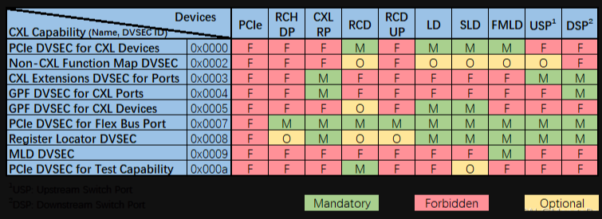
Reg in MMIO
上文提到了 9 组实现在 PCIe 配置空间的 CXL 相关 DVSEC。鉴于部分 CXL 组件不具备 PCIe 配置空间，且 PCIe 配置空间 4KB 较小难以满足 CXL Component Register 的 Size 要求，此时 CXL 相关的 DVSEC 及 Component Register 可以实现在 Memory Mapped 空间（MMIO），通过 Memory 读写请求进行访问。
截至 CXL 3.0，CXL 协议定义了 6 类位于 MMIO 中的寄存器：
RCH DP RCRB ，可视为 RCH 的 4KB 配置空间，跟其 MEMBAR0 范围不重叠，基地址由 ACPI 指定。 RCH DP Component Register ，包括 CXL 协议层、链路层、物理层及 ARB/MUX 等组件相关的寄存器，共 64KB，其位于 RCH DP RCRB 指定的 64b MEMBAR0 范围内 （物理上位于 RCH 端）。 RCD UP RCRB ，可视为 RCD 的 4KB 配置空间，跟 RCH DP RCRB 占用连续的两个 4KB 空间，其可以（不强求）跟 RCH DP 的 Memory 范围（非 MEMBAR0）重叠。RCD UP RCRB 的基地址采用 RCD 复位后收到的 RCH DP 发来的第一笔 MRd（CXL 1.1 时 MRd/MWr 均可）的地址。 RCD UP Component Register ，包括 CXL 协议层、链路层、物理层及 ARB/MUX 等组件相关的寄存器，共 64KB；对于实现了 RCRB 的 RCD，该寄存器块位于 RCD UP RCRB 指定的 64b MEMBAR0 范围内 （物理上位于 RCD 端），该范围同时处于 RCH DP 的 Memory 范围（非 MEMBAR0）之内；对于未实现 RCRB 的 RCD，该组寄存器的具体类型及位置 由 Register Locator DVSEC 来指定 Component Register for ALL Other CXL Components ，其他 CXL Component 相关寄存器。这组寄存器的具体类型及位置 由 Register Locator DVSEC 来指定 。 CXL Host Bridge Component Register (CHBCR)，CXL Host Bridge 组件寄存器，目前主要用于控制多 RP 之间的 Memory Interleaving，其基地址从 ACPI CEDT 中取得。 上述 RCRB 及 Components Register 在地址空间中的分布示意图如下。CHBCR 及 Register Locator DVSEC 指定的 Component Registers for All Other CXL Components 位置不定，未包含在此图中。

参考：这个博主感觉很厉害，有很多PCIe和CXL相关文章，很详细，精彩。blog
CXL in CMN
[toc]
CXS 控制器
ARM RD_N2 参考设计中，chip to chip互连的通信协议是CCIX2.0，CMN-700 TRM中使用的描述是ARM 私有协议CML_SMP。
S家的CXL控制器内部集成了一个CXS控制器，支持CCIX2.0，其实CML_SMP就是CCIX2.0的改良版，增加了一些新的不影响功能的信息。
CMN 上CCG节点负责连接外部的chip或者CXL设备。
Coherent Multichip Link (CML) device = CCG
A given multi-chip link can be used for: • SMP (CML_SMP) connection • CXL device attachment
A CML device (CCG) can be configured to be used for CML_SMP connection or CXL device attachment.
For SMP systems, CCG block is required to enable multi-chip SMP communications over a CXS issue B interface.
那么CXL就应该使用CXS issue A interface
CCG 结构

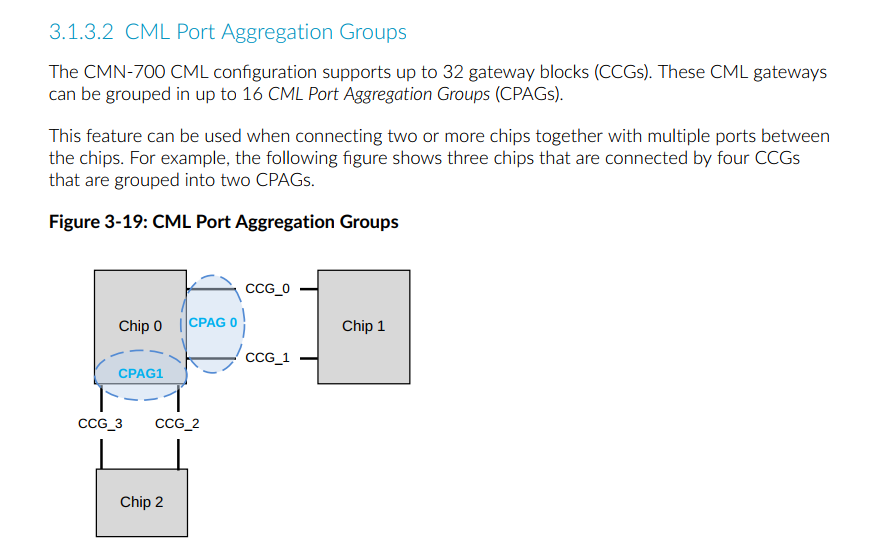
CCG 工作模式
The CML RA node type has the following MPAM modes:
-
SMP mode The CML RA passes the MPAM field on the USER field of the request. When snooped, the CML RA receives the MPAM field and passes it through the CHI SNP MPAM field.
-
Non-SMP mode The CML RA drops the MPAM field that is received on the CHI request. The CML RA also does not receive MPAM field on CML snoops in this mode.
-
CXSA mode The CML RA passes the MPAM field on the USER field of the request, even though CXSA is in non-SMP mode. You can use a configuration bit to enable passing of MPAM attributes when in CXSA mode.
The CML HA node type has the following MPAM modes:
-
SMP mode The CML HA receives MPAM fields through the USER field of the request and passes them through the CHI MPAM field. On incoming CHI transactions, the CML HA passes CHI MPAM values through on the USER field.
-
Non-SMP mode The CML HA drops the MPAM values that it receives on CHI snoop. The CML HA does not receive the MPAM attributes on CML requests.
当连接CXL 时候，就需要enable CXSA mode in RA。
LA 中也有相关寄存器，也需要enable CXL。
CCG SAM
CMN CCG节点是负责连接CXL的，目前CMN700支持type3类型的设备，因此，需要为CXL type3 设备的memory 预留一段内存。具体使用就是在配置CMN SAM时候配置，将一段内存映射到CCG 节点。
CXL in SCP and EDK2
SCP 固件中实现了对CXL功能的支持，基于开源的代码，学习相关的配置。
CCG 配置
-
SHA-1: bc14e780c120fc656ce905d6e219078a0006da88
- module/cmn700: configuring CCG for mapping Host address to CXL mem
A Memory region is reserved for CXL Memory. CXL.Mem (0x3fe_0000_0000) comes under 4TB Chip-0 memory and the whole region is by default configured as SCG. Configured CXL.Mem region in HNF-SAM HTG and CCG SA node IDs for HTGs in following order -
HNF_SAM_CCG_SA_NODEID_REG HNF_SAM_HTG_CFG3_MEMREGION HNF_SAM_HTG_CFG2_MEMREGION HNF_SAM_HTG_CFG1_MEMREGION
CXL Memory region is accessible as Normal memory with above configuration.
This patch maps Host address space to CXL device mem area through CCG node, based on the CXL device memory size, which is discovered by CXL module. CXL module invokes runtime CMN700 API for mapping the host address space and configuring CCG node.
This patch also adds a flag "cxl_mem" in CCG_Config structure for identifying host region and configuration reserved for CXL device memory purpose and thus differentiating from Remote chip memory.
Signed-off-by: Sayanta Pattanayak sayanta.pattanayak@arm.com Change-Id: I988f471db6a6a55f97320519413daedd8ea524fb
config_cmn700.c
N2 参考设计中，将0-0x40000000000全都设置为SCG 属性，
然后再从HNSAM中将0-0x3fe00000000设置为CCG-cxl_mem属性。
#if (PLATFORM_VARIANT == 1)
static const struct mod_cmn700_ccg_config ccg_config_table_chip_0[] = {
{
.remote_rnf_count = 0,
.remote_mmap_table = {
.base = UINT64_C(0x3fe00000000),
.size = UINT64_C(8) * FWK_GIB,
.type = MOD_CMN700_REGION_TYPE_CCG,
},
.ra_mmap_table = {
{
.base = UINT64_C(0x3fe00000000),
.size = UINT64_C(8) * FWK_GIB,
.remote_haid = 0,
},
{ 0 }
},
.remote_agentid_to_linkid_map = {
{
.remote_agentid_start = (RNF_PER_CHIP * CHIP_0),
.remote_agentid_end = (RNF_PER_CHIP * CHIP_0)
},
},
.smp_mode = false,
.cxl_mem = true,
},
};
#endif
增加了一个entry，一共8G，同时增加了一个flag cxl_mem。类型是CCG。
static int cmn700_setup_rnsam_ccg_regions(void)
{
const struct mod_cmn700_config *config;
const struct mod_cmn700_mem_region_map *region;
struct cmn700_rnsam_reg *rnsam;
unsigned int count;
unsigned int cxra_ldid;
unsigned int cxra_node_id;
unsigned int idx;
uint32_t bit_pos;
uint32_t group;
config = ctx->config;
/* Do configuration for CCG Nodes */
for (idx = 0; idx < config->ccg_table_count; idx++) {
region = &config->ccg_config_table[idx].remote_mmap_table;
if (region->type != MOD_CMN700_REGION_TYPE_CCG) {
return FWK_E_DATA;
}
FWK_LOG_INFO(
MOD_NAME " [0x%llx - 0x%llx] %s",
region->base,
region->base + region->size - 1,
mmap_type_name[region->type]);
/* If the region is for extended memory area like CXL.Mem
* and connected through CCG then the region shouldn't be
* marked as Non-Hash region. CXL.Mem region should be part
* of Hashed cache group area.
*/
if (config->ccg_config_table[idx].cxl_mem == true)
continue;
for (count = 0; count < ctx->internal_rnsam_count; count++) {
rnsam = ctx->internal_rnsam_table[count];
在配置CCG 时候，如果是CXL.Mem，就不应该用non-hash，而是用hash。
static int map_ccg_for_cxl_mem(uint64_t size)
{
uint32_t idx;
const struct mod_cmn700_config *config = ctx->config;
const struct mod_cmn700_ccg_config *ccg_config;
cmn700_rnsam_stall();
/* Do configuration of CCG Node for mapping remote CXL Mem area. */
for (idx = 0; idx < config->ccg_table_count; idx++) {
ccg_config = &(config->ccg_config_table[idx]);
if (ccg_config->cxl_mem == true)
ccg_setup_for_remote_mem(size, ctx, ccg_config);
}
cmn700_rnsam_unstall();
return FWK_SUCCESS;
}
这里新增了一个API，用来设置CCG CXL.Mem
同时，发现这里有个rnsam stall和unstall 函数，看起来是用来暂停rnsam的。不会产生路由地址，而是直接将所有的请求发给default node。
当前项目，直接将STATUS寄存器设置为了0x2，也就是unstall，enable RNSAM。
问题：如果需要online 更新RNSAM，是否就需要调用stall接口。

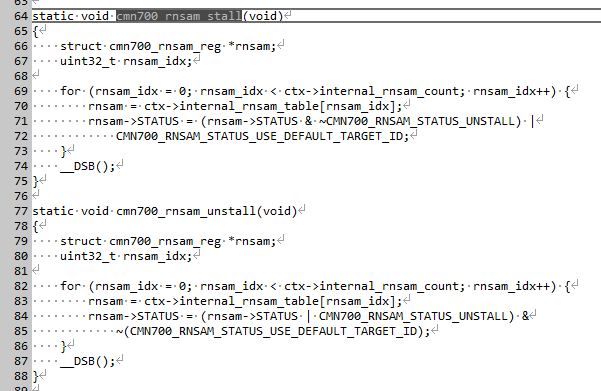
ccg_setup_for_remote_mem
int ccg_setup_for_remote_mem(
uint64_t size,
struct cmn700_device_ctx *ctx,
const struct mod_cmn700_ccg_config *ccg_config)
{
uint64_t reg_val;
unsigned int index;
unsigned int ccg_ldid;
struct cmn700_hnf_reg *hnf_reg;
struct cmn700_ccg_ra_reg *ccg_ra_reg;
cmn700_ccg_ctx.is_prog_for_port_agg = false;
/* Enable CXSA */
ccg_ldid = get_ldid(ctx, cmn700_ccg_ctx.is_prog_for_port_agg);
ccg_ra_reg = ctx->ccg_ra_reg_table[ccg_ldid].ccg_ra_reg;
for (index = 0; index < ctx->hnf_count; index++) {
/* Programming sequence to enable CXL.mem regions inside HNSAM */
hnf_reg = (struct cmn700_hnf_reg *)ctx->hnf_node[index];
/* Configuring CCG SA node IDs for HTGs in the HNSAM */
reg_val = hnf_reg->HNF_SAM_CCG_SA_NODEID_REG[0];
reg_val &= ~(CMN700_HNF_SAM_CCG_SA_NODEID_MASK);
reg_val |= get_node_id(ccg_ra_reg);
hnf_reg->HNF_SAM_CCG_SA_NODEID_REG[0] = reg_val;
/* CXSA/CXLSA aggregated SA selection function */
/* 用来指定这个region映射到几个SN NODE，如8SN node, 或者是CXSA 模式 */
hnf_reg->HNF_SAM_HTG_CFG3_MEMREGION[0] |=
(CMN700_HNF_SAM_HTG_MODE_CXSA <<
CMN700_HNF_SAM_HTG_SN_MODE_POS);
/* 64B interleaved */
/* CXSA 模式下的 interleaved 颗粒度，这里只清除了，没有置位，说明用的默认0，64B */
reg_val = hnf_reg->HNF_SAM_HTG_CFG3_MEMREGION[0];
reg_val &= ~(CMN700_HNF_SAM_HTG_SA_DEVICE_INTERLEAVE_CNTL_MASK <<
CMN700_HNF_SAM_HTG_SA_DEVICE_INTERLEAVE_CNTL_POS);
hnf_reg->HNF_SAM_HTG_CFG3_MEMREGION[0] |= reg_val;
/* 1 CXSA/CXLSA port used */
/* 这里只清除了，没有置位，说明用的默认0 */
reg_val = hnf_reg->HNF_SAM_HTG_CFG3_MEMREGION[0];
reg_val &= ~(CMN700_HNF_SAM_HTG_SA_PORTS_CNT_MASK <<
CMN700_HNF_SAM_HTG_SA_PORTS_CNT_POS);
hnf_reg->HNF_SAM_HTG_CFG3_MEMREGION[0] |= reg_val;
/* htg_region_end_addr[51:20] = end address of HTG region */
reg_val = ccg_config->ra_mmap_table[0].base +
(size - 1);
reg_val &= ~(CMN700_HNF_SAM_HTG_REGION_ADDR_RES_MASK);
hnf_reg->HNF_SAM_HTG_CFG2_MEMREGION[0] |= reg_val;
/* htg_region_base_addr[51:20] = start address of HTG region */
reg_val = ccg_config->ra_mmap_table[0].base;
reg_val &= ~(CMN700_HNF_SAM_HTG_REGION_ADDR_RES_MASK);
hnf_reg->HNF_SAM_HTG_CFG1_MEMREGION[0] |= reg_val;
/* Configuring HTG region as Valid */
hnf_reg->HNF_SAM_HTG_CFG1_MEMREGION[0] |=
(UINT64_C(0x1) << CMN700_HNF_SAM_HTG_REGION_VALID_POS);
}
/*
* Program the CXRA SAM with the address range and the corresponding
* remote HAID.
*/
program_ccg_ra_sam_addr_region(ctx, ccg_config);
update_cxl_mem_region(ccg_config->ra_mmap_table[0].base,
ccg_config->ra_mmap_table[0].size);
return FWK_SUCCESS;
}
实际应用
link前
主要是寻址范围，cxl 类型，cxsa enable等。
- RA 的 SAM region: 范围
- RA 的 SAM valid：valid有效位
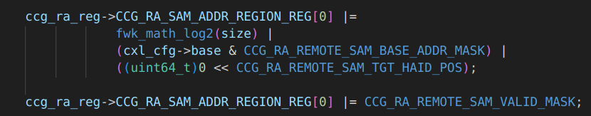
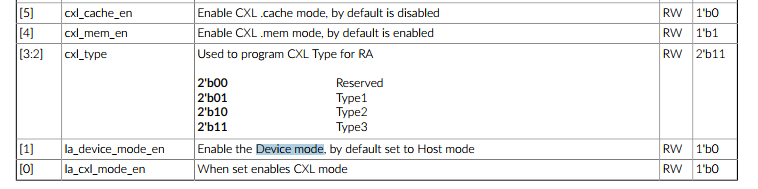
- CCLA的flex bus control： MEM CACHE
- CCLA的config control： MEM CACHE

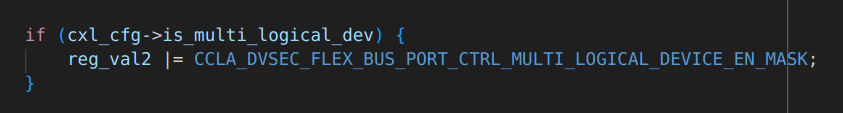
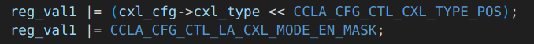
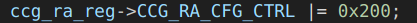
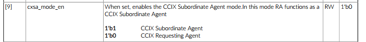
link后
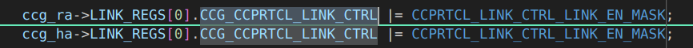
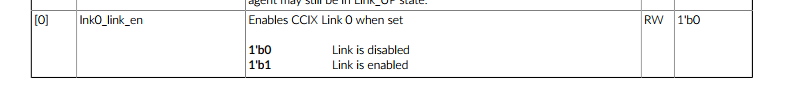
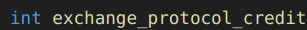
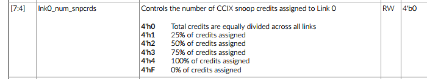
CXL 枚举
[toc]
CXL 协议判断
判断当前链路上跑的是CXL还是PCIe，需要读取寄存器。


CXL2.0
与PCIe 一致。
CXL1.1
RCiEP
HDM Decoder
Silicon IP
LeetCode
记录自己做过的一些题，方便复习。
二分法
Tool
Git
解决git bash 中git status不能显示中文
将git 配置文件 core.quotepath项设置为false。
quotepath表示引用路径
加上--global表示全局配置
git bash 终端输入命令：
git config --global core.quotepath false
工作中的好习惯
[toc]
以前在英子工作的时候有很多我觉得很好的工作习惯，但是目前的公司使用的不太多，总结记录一下，以防忘记。
邮件
- 不想留底的内容不要写；
- 想留底的内容一定要写；
- 要写经过深思熟虑的内容；
- 一个邮件只讲一件事；
- 情绪化的内容尽量不要写；
- 通知、工作安排、进度交流要用邮件；
- 邮件要规整，比如加一些圆点标记符号等，条理清晰；
会议纪要Meeting Minutes
记录会上讨论了什么，有什么结论，哪些事情没有结论等，方便与下一次会议衔接。同时，明确职责划分，防止会议上讨论的地方互相有误解，尤其是和老外开会。
同时可以站在全局视角看部门内的事务。
英文会议
提前了解会议议题，要对讨论的内容熟悉。
在老外说完以后，可以重复、总结他们的观点，防止理解的有偏差。
功能开发
-
写代码；
-
在Jira或者是HSD上记录自己做了哪些unit test，覆盖了哪些功能；
-
回归测试，在入库之前，自己先做一些回归测试，确保自己的这个功能不会对其他功能有影响。比如，无论改了什么功能，要测试BIOS 能正常开机进OS，能修改选项，能升级其他版本的BIOS等最基础的功能。
One on One
这个功能还是挺好的，可以增进了解，增强信任。不限于manager，也可以是任何人。记得以前除了manager，还会和second manager，arch，Jun等人one one，收获很多。